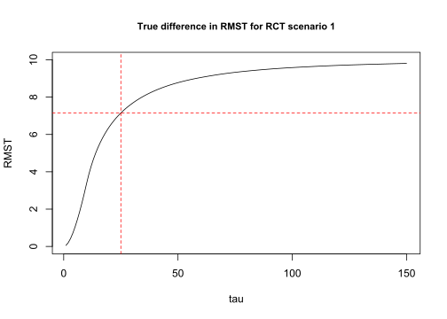
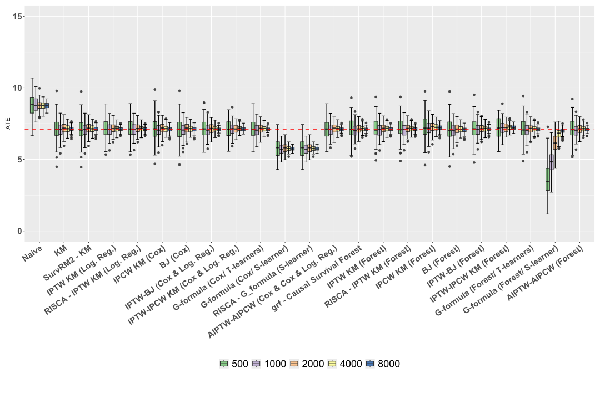
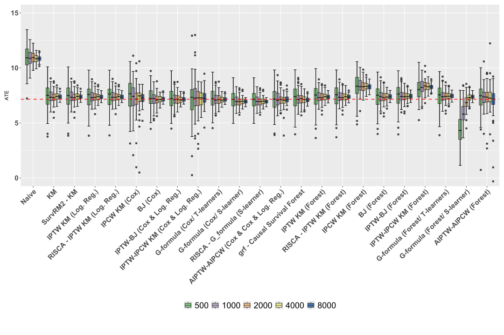
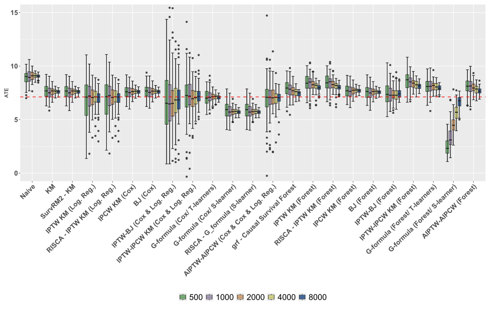
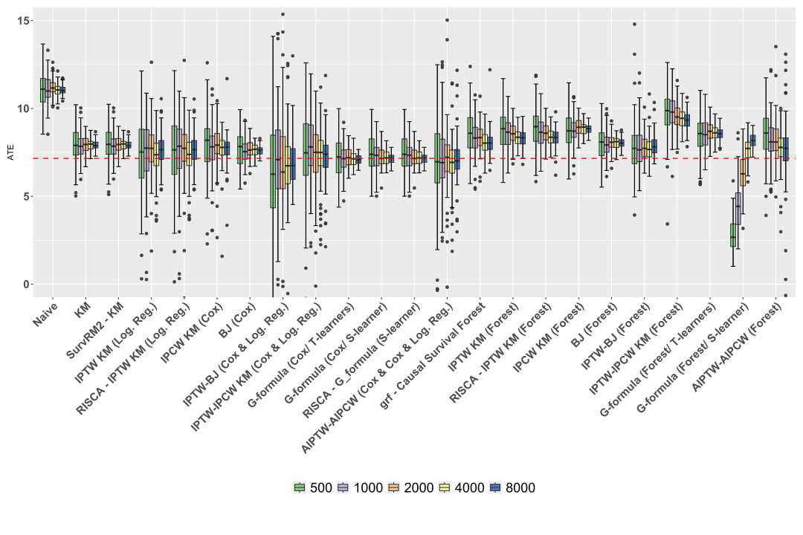
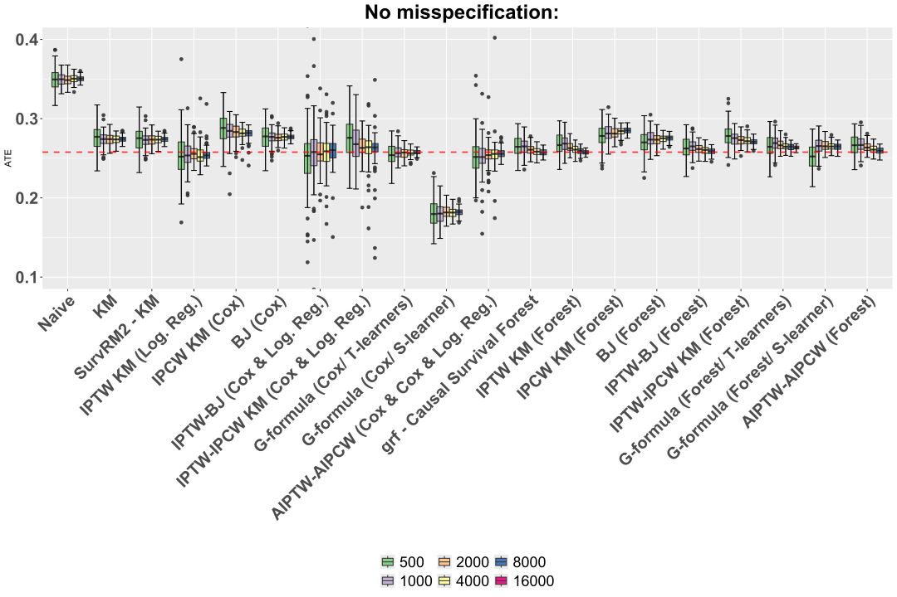
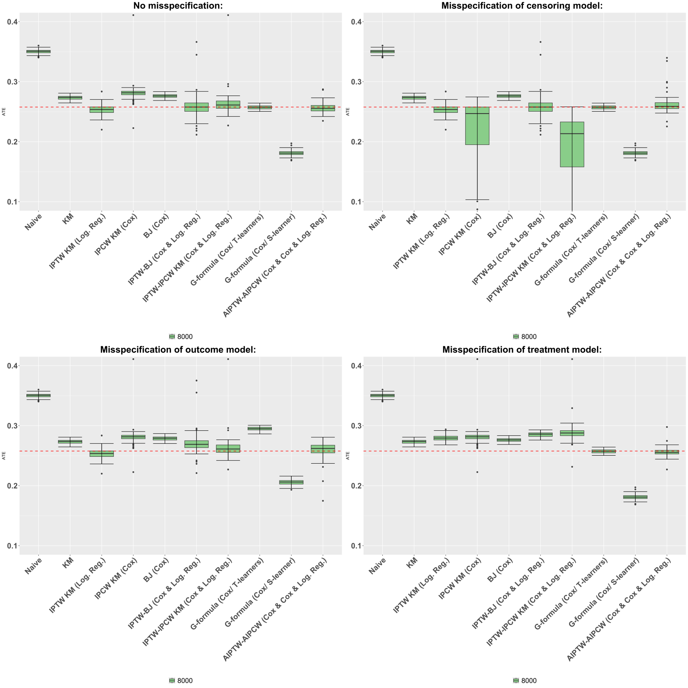
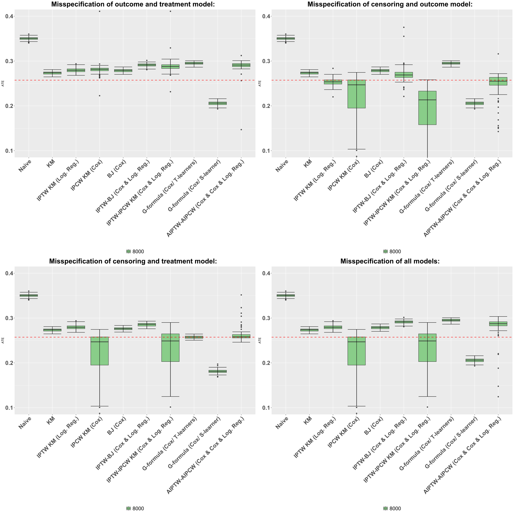

[1] "The ground truth for RCT scenario 1 and 2 at time 25 is 7.1"Estimation of the Average Treatment Effect (ATE): Practical Recommendations
 ISSN 2824-7795
ISSN 2824-7795
Causal survival analysis is a growing field that integrates causal inference (D. B. Rubin 1974; Hernán and Robins 2010) with survival analysis (Kalbfleisch and Prentice 2002) to evaluate the impact of treatments on time-to-event outcomes, while accounting for censoring situations where only partial information about an event’s occurrence is available.
Being a relatively new domain, the existing literature, though vast, remains fragmented. As a result, a clear understanding of the theoretical properties of various estimators is challenging to obtain. Moreover, the implementation of proposed methods is limited, leaving researchers confronted with a range of available estimators and the need to make numerous methodological decisions. There is a pressing need for a comprehensive survey that organizes the available methods, outlines the underlying assumptions, and provides an evaluation of estimator performance — particularly in finite sample settings. Such a survey also has the potential to help identify remaining methodological challenges that need to be addressed. This need becomes increasingly urgent as causal survival analysis gains traction in both theoretical and applied domains. For instance, its applications to external control arm analyses are particularly relevant in the context of single-arm clinical trials, where traditional comparator arms are unavailable. Regulatory guidelines have begun to acknowledge and support such semi-experimental approaches, reflecting the broader evolution of trial design and therapeutic innovation in precision medicine, see for instance (European Medecines Agency 2024).
By synthesizing the theoretical foundations, assumptions, and performance of various estimators, a survey on existing causal survival analysis methods would provide researchers and practitioners with the necessary tools to make informed methodological choices. This is crucial for fostering robust and reliable applications of causal survival analysis in both academic research and practical settings, where precise and valid results are paramount.
In this paper, we focus our attention to the estimation of the Restricted Mean Survival Time (RMST), a popular causal measure in survival analysis which offers an intuitive interpretation of the average survival time over a specified period. In particular, we decided to not cover the estimation of Hazard Ratio (HR), which has been prominently used but often questioned due to its potential non-causal nature (Martinussen, Vansteelandt, and Andersen 2020). Additionally, unlike the Hazard Ratio, the RMST has the desirable property of being a collapsible measure, meaning that the population effect can be expressed as a weighted average of subgroup effects, with positive weights that sum to one (Huitfeldt, Stensrud, and Suzuki 2019).
We set the analysis in the potential outcome framework, where a patient, described by a vector of covariates X \in \mathbb{R}^p, either receives a treatment (A=1) or is in the control group (A=0). The patient will then survive up to a certain time T(0) \in \mathbb{R}^+ in the control group, or up to a time T(1)\in \mathbb{R}^+ in the treatment group. In practice, we cannot simultaneously have access to T(0) and T(1), as one patient is either treated or control, but only to T defined as follows:
Assumption. (Stable Unit Treatment Value Assumption: SUTVA) T = AT(1) + (1-A)T(0). \tag{1}
Due to potential censoring, the outcome T is not completely observed. The most common form of censoring is right-censoring (also known as type II censoring), which occurs when the event of interest has not taken place by the end of the observation period, indicating that it may have occurred later if the observation had continued (Turkson, Ayiah-Mensah, and Nimoh 2021). We focus in this study on this type of censoring only and we assume that we observe \tilde T= T \wedge C = \min(T,C) for some censoring time C \in \mathbb{R}^+. When an observation is censored, the observed time is equal to the censoring time.
We also assume that we know whether an outcome is censored or not. In other words, we observe the censoring status variable \Delta = \mathbb{I}\{T \leqslant C\}, where \mathbb{I}\{\cdot\} is the indicator function. \Delta is 1 if the true outcome is observed, and 0 if it is censored.
We assume observing a n-sample of variables (X,A,\widetilde T,\Delta) stemming from an n-sample of the partially unobservable variables (X,A,T(0),T(1),C). A toy exemple of such data is given in Table 1.
| ID | Covariates | Treatment | Censoring | Status | Potential outcomes | True outcome | Observed outcome | |||
|---|---|---|---|---|---|---|---|---|---|---|
| i | X_{1} | X_{2} | X_{3} | A | C | \Delta | T(0) | T(1) | T | \tilde{T} |
| 1 | 1 | 1.5 | 4 | 1 | ? | 1 | ? | 200 | 200 | 200 |
| 2 | 5 | 1 | 2 | 0 | ? | 1 | 100 | ? | 100 | 100 |
| 3 | 9 | 0.5 | 3 | 1 | 200 | 0 | ? | ? | ? | 200 |
Our aim is to estimate the Average Treatment Effect (ATE) defined as the difference between the Restricted Mean Survival Time of the treated and controls (Royston and Parmar 2013).
Definition 1 (Causal effect: Difference between Restricted Mean Survival Time)
\theta_{\mathrm{RMST}} = \mathbb{E}\left[T(1) \wedge \tau - T(0) \wedge \tau\right], where a \wedge b := \min(a,b) for a,b \in \mathbb{R}.
We define the survival functions S^{(a)}(t):=\mathbb{P}(T(a) > t) for a \in \{0,1\}, i.e., the probability that a treated or non-treated individual will survive beyond a given time t. Likewise, we let S(t) := \mathbb{P}(T >t), and S_C(t) := \mathbb{P}(C > t). We also let G(t) := \mathbb{P}(C \geqslant t) be the left-limit of the survival function S_C. Because T(a) \wedge \tau are non-negative random variables, one can easily express the restricted mean survival time using the survival functions:
\mathbb{E}(T(a) \wedge \tau) = \int_{0}^{\infty} \mathbb{P}(T(a)\wedge \tau > t)dt = \int_{0}^{\tau}S^{(a)}(t)dt. \tag{2}
Consequently, \theta_{\mathrm{RMST}} can be interpreted as the mean difference between the survival function of treated and control until a fixed time horizon \tau. A difference in RMST \theta_{\mathrm{RMST}} = 10 days with \tau=200 means that, on average, the treatment increases the survival time by 10 days at 200 days. We give a visual interpretation of RMST in Figure 1.
Although the present work focuses on the estimation of the difference in RMST, we would like to stress that the causal effect can be assessed through other measures, such as for instance the difference of the survival functions \theta_{\mathrm{SP}} := S^{(1)}(\tau) - S^{(0)}(\tau) for some time \tau, see for instance (Ozenne et al. 2020). As mentionned in Section 1.1, another widely used measure (though not necessarily causal) is the hazards ratio, defined as \theta_{\mathrm{HR}} := \frac{\lambda^{(1)}(\tau)}{\lambda^{(0)}(\tau)}, where the hazard function \lambda^{(a)} is defined as \lambda^{(a)}(t) := \lim_{h \to 0^+}\frac{\mathbb{P}(T(a) \in [t,t+j)|T(a) \geqslant t)}{h}. in a continuous setting, or as \lambda^{(a)}(t) := \mathbb{P}(T(a) = t|T(a) \geqslant t) when the survival times are discrete. The hazard functions and the survival functions are linked through the identities S^{(a)}(t) = \exp\left(-\Lambda^{(a)}(t)\right) \quad \text{where} \quad \Lambda^{(a)}(t) := \int_0^t \lambda^{(a)}(s)\mathop{}\!\mathrm{d}s, \tag{3} in the continuous case. The functions \Lambda^{(a)} are call the cumulative hazard functions. In the discrete case, we have in turn S^{(a)}(t) = \prod_{t_k \leqslant t} \left(1-\lambda^{(a)}(t_k)\right), \tag{4} where \{t_1,\dots,t_K\} are the atoms of T^{(a)}. These hazard functions are classically used to model the survival times and the censoring times, see Section 2.2.1.
In this paper, we detail the minimal theoretical framework that allows the analysis of established RMST estimators in the context of both Randomized Controlled Trials (Section 2) and observational data (Section 3). We give their statistical properties (consistency, asymptotic normality) along with proofs when possible. We then conduct in Section 5 a numerical study of these estimators through simulations under various experimental conditions, including independent and conditionally independent censoring and correct and incorrect model specifications. We conclude in Section 6 with practical recommendations on estimator selection, based on criteria such as asymptotic behavior, computational complexity, and efficiency.
We provide in Table 2 a summary of the notation used throughout the paper.
| Symbol | Description |
|---|---|
| X | Covariates |
| A | Treatment indicator (A=1 for treatment, A=0 for control) |
| T | Survival time |
| T(a), a \in \{0,1\} | Potential survival time respectively with and without treatment |
| S^{(a)},a \in \{0,1\} | Survival function S^{(a)}(t) =\mathbb{P}(T(a) > t) of the potential survival times |
| \lambda^{(a)},a \in \{0,1\} | Hazard function \lambda^{(a)}(t) =\lim_{h \to 0^+}\mathbb{P}(T(a) \in [t,t+h) |T(a)\geqslant t)/h of the potential survival times |
| \Lambda^{(a)},a \in \{0,1\} | Cumulative hazard function of the potential survival times |
| C | Censoring time |
| S_C | Survival function S_C(t) =\mathbb{P}(C > t) of the censoring time |
| G | Left-limit of the survival function G(t) =\mathbb{P}(C \geqslant t) of the censoring time |
| \widetilde{T} | Observed time (T \wedge C) |
| \Delta | Censoring status \mathbb{I}\{T \leqslant C \} |
| \Delta^{\tau} | Censoring status of the restricted time \Delta^{\tau} = \max\{\Delta, \mathbb{I}\{\widetilde{T} \geqslant\tau\}\} |
| \{t_{1},t_{2},\dots,t_{K}\} | Discrete times |
| e(x) | Propensity score \mathbb{E} [A| X = x] |
| \mu(x,a), a \in \{0,1\} | \mathbb{E}[T \wedge \tau \mid X=x,A=a ] |
| S(t|x,a), a \in \{0,1\} | Conditional survival function, \mathbb{P}(T > t | X=x, A =a). |
| \lambda^{(a)}(t|x), a \in \{0,1\} | Conditional hazard functions of the potential survival times |
| G(t|x,a), a \in \{0,1\} | left-limit of the conditional survival function of the censoring \mathbb{P}(C\geqslant t|X=x,A=a) |
| Q_{S}(t|x,a), a \in \{0,1\} | \mathbb{E}[T \wedge \tau \mid X=x,A=a, T \wedge \tau>t] |
Randomized Controlled Trials (RCTs) are the gold standard for establishing the effect of a treatment on an outcome, because treatment allocation is controlled through randomization, which ensures (asymptotically) the balance of covariates between treated and controls, and thus avoids problems of confounding between treatment groups. The core assumption in a classical RCT is the random assignment of the treatment (D. B. Rubin 1974).
Assumption. (Random treatment assignment) There holds: A \perp\mkern-9.5mu\perp T(0),T(1),X \tag{5}
We also assume that there is a positive probability of receiving the treatment, which we rephrase under the following assumption.
Assumption. (Trial positivity) 0 < \mathbb{P}(A=1) < 1 \tag{6}
Under Assumptions 5 and 6, classical causal identifiability equations can be written to express \theta_{\mathrm{RMST}} without potential outcomes.
\begin{aligned} \theta_{\mathrm{RMST}} &= \mathbb{E}[T(1) \wedge \tau - T(0) \wedge \tau]\\ &= \mathbb{E}[T(1) \wedge \tau | A = 1] - \mathbb{E}[ T(0) \wedge \tau| A= 0] && \tiny\text{(Random treatment assignment)} \\ &= \mathbb{E}[T \wedge \tau | A = 1] - \mathbb{E}[ T \wedge \tau| A= 0]. && \tiny\text{(SUTVA)} \end{aligned} \tag{7}
However, Equation 7 still depends on T, which remains only partially observed due to censoring. To ensure that censoring does not compromise the identifiability of treatment effects, we must impose certain assumptions on the censoring process, standards in survival analysis, namely, independent censoring and conditionally independent censoring. These assumptions lead to different estimation approaches. We focus on two strategies: those that aim to directly estimate \mathbb{E}[T \wedge \tau | A = a] directly (e.g., through censoring-unbiased transformations, see Section 2.2), and those that first estimate the survival curves to derive RMST via Equation 2 (such as the Kaplan-Meier estimator and all its variants, see the next Section).
In a first approach, one might assume that the censoring times are independent from the rest of the variables.
Assumption. (Independent censoring) C \perp\mkern-9.5mu\perp T(0),T(1),X,A. \tag{8}
Under Equation 8, subjects censored at time t are representative of all subjects who remain at risk at time t. Figure 2 represents the causal graph when the study is randomized and outcomes are observed under independent censoring.
We also assume that there is no almost-sure upper bound on the censoring time before \tau, which we rephrase under the following assumption.
Assumption. (Positivity of the censoring process) There exists \varepsilon> 0 such that G(t) \geqslant\varepsilon\quad \text{for all} \quad t \in [0,\tau). \tag{9}
If indeed it was the case that \mathbb{P}(C < t) = 1 for some t < \tau, then we would not be able to infer anything on the survival function on the interval [t,\tau] as all observation times \widetilde T_i would be in [0,t] almost surely. In practice, adjusting the threshold time \tau can help satisfy the positivity assumption. For instance, in a clinical study, if a subgroup of patients has zero probability of remaining uncensored at a given time, \tau can be modified to ensure that participants have a feasible chance of remaining uncensored up to the revised threshold.
The two Assumptions 8 and 9 together allow the distributions of T(a) to be identifiable, in the sense that there exists an identity that expresses S^{(a)} as a function of the joint distribution of (\widetilde T,\Delta,A=a), see for instance Ebrahimi, Molefe, and Ying (2003) for such a formula in a non-causal framework. This enables several estimation strategies, the most well-known being the Kaplan-Meier product-limit estimator.
To motivate the definition of the latter and explicit the identifiability identity, we set the analysis in the discrete case. We let \{t_k\}_{k \geqslant 1} be a set of positive and increasing times and assume that T \in \{t_k\}_{k \geqslant 1} almost surely. Then for any t \in [0,\tau], it holds, letting t_0 = 0 by convention, thanks to Equation 4,
\begin{align*} S(t| A=a) &= \mathbb{P}(T > t|A=a) = \prod_{t_k \leqslant t} \left(1 - \mathbb{P}(T = t_k | T > t_{k-1}, A=a)\right) \\ &= \prod_{t_k \leqslant t} \left(1 - \frac{\mathbb{P}(T = t_{k}, A=a)}{\mathbb{P}(T \geqslant t_{k},A=a)}\right). \end{align*}
Using Assumptions 8 and 9, we find that \frac{\mathbb{P}(T = t_{k}, A=a)}{\mathbb{P}(T \geqslant t_{k},A=a)} = \frac{\mathbb{P}(T = t_{k},C \geqslant t_k,A=a)}{\mathbb{P}(T \geqslant t_{k}, C\geqslant t_k,A=a)} = \frac{\mathbb{P}(\widetilde T = t_{k}, \Delta = 1,A=a)}{\mathbb{P}( \widetilde T \geqslant t_{k},A=a)}, \tag{10} yielding the final identity S(t|A=a) = \prod_{t_k \leqslant t} \left(1-\frac{\mathbb{P}(\widetilde T = t_{k}, \Delta = 1,A=a)}{\mathbb{P}( \widetilde T \geqslant t_{k},A=a)}\right). \tag{11} Notice that the right hand side only depends on the distribution of the observed tuple (A,\widetilde T,\Delta). This last equation suggests in turn to introduce the quantities D_k(a) := \sum_{i=1}^n \mathbb{I}(\widetilde T_i = t_k, \Delta_i = 1, A=a) \quad\text{and}\quad N_k(a) := \sum_{i=1}^n \mathbb{I}(\widetilde T_i \geqslant t_k, A=a), \tag{12} which correspond respectively to the number of deaths D_k(a) and of individuals at risk N_k(a) at time t_k in the treated group (a=1) or in the control group (a=0).
Definition 2 (Kaplan-Meier estimator, Kaplan and Meier (1958)) With D_k(a) and N_k(a) defined in Equation 12, we let
\widehat{S}_{\mathrm{KM}}(t|A=a) := \prod_{t_k \leqslant t}\left(1-\frac{D_k(a)}{N_k(a)}\right). \tag{13}
The assiociated RMST estimator is then simply defined as \widehat{\theta}_{\mathrm{KM}} = \int_{0}^{\tau}\widehat{S}_{KM}(t|A=1)-\widehat{S}_{KM}(t|A=0)dt. \tag{14} The Kaplan-Meier estimator is the Maximum Likelihood Estimator (MLE) of the survival functions, see for instance Kaplan and Meier (1958). Furthermore, because D_k(a) and N_k(a) are sums of i.i.d. random variables, the Kaplan-Meier estimator inherits some convenient statistical properties.
Proposition 1 Under Assumptions 1, 5, 6, 8 and 9, and for all t \in [0,\tau], the estimator \widehat S_{\mathrm{KM}}(t|A=a) of S^{(a)}(t) is strongly consistent and admits the following bounds for its bias: 0 \leqslant S^{(a)}(t) - \mathbb{E}[\widehat S_\mathrm{KM}(t|A=a)] \leqslant O(\mathbb{P}(N_k(a) = 0)), where k is the greatest time t_k such that t \geqslant t_k.
Gill (1983) gives a more precise lower-bound on the bias in the case of continuous distributions, which was subsequently refined by Zhou (1988). The bound we give, although slightly looser, still exhibits the same asymptotic regime. In particular, as soon as S^{(a)}(t) > 0 (and Assumption 9 holds), then the bias decays exponentially fast towards 0. We give in Section 8.1 a simple proof of our bound is our context.
Proposition 2 Under Assumptions 1, 5, 6, 8 and 9, and for all t \in [0,\tau], \widehat S_{\mathrm{KM}}(t|A=a) is asymptotically normal and \sqrt{n}\left(\widehat S_{\mathrm{KM}}(t|A=a) - S^{(a)}(t)\right) converges in distribution towards a centered Gaussian of variance V_{\mathrm{KM}}(t|A=a) := S^{(a)}(t)^2 \sum_{t_k \leqslant t} \frac{1-s_k(a)}{s_k(a) r_k(a)}, where s_k(a) = S^{(a)}(t_k)/S^{(a)}(t_{k-1}) and r_k(a) = \mathbb{P}(\widetilde T \geqslant t_k, A=a).
The proof of Proposition 2 can be found in Section 8.1. Because D_k(a)/N_k(a) is a natural estimator of 1-s_k(a) and, \frac{1}{n} N_k(a) a natural estimator for r_k(a), the asymptotic variance of the Kaplan-Meier estimator can be estimated with the so-called Greenwood formula, as already derived heuristically in Kaplan and Meier (1958):
\widehat{\mathrm{Var}} \left(\widehat{S}_{\mathrm{KM}}(t|A=a)\right) := \widehat{S}_{\mathrm{KM}}(t|A=a)^2 \sum_{t_k \leqslant t} \frac{D_k(a)}{N_k(a)(N_k(a)-D_k(a))}. \tag{15}
We finally mention that the KM estimator as defined in Definition 2 still makes sense in a non-discrete setting, and one only needs to replace the fixed grid \{t_k\} by the values at which we observed an event (\widetilde T_i = t_k, \Delta_i =1). We refer to Breslow and Crowley (1974) for a study of this estimator in the continuous case and to Aalen, Borgan, and Gjessing (2008), Sec 3.2 for a general study of the KM estimator through the prism of point processes.
An alternative hypothesis in survival analysis that relaxes the assumption of independent censoring is conditionally independent censoring, also refered sometimes as informative censoring. It allows to model more realistic censoring processes, in particular in situations where there are reasons to believe that C may be dependent from A and X (for instance, if patient is more like to leave the study when treated because of side-effects of the treatment).
Assumption. (Conditionally independent censoring) C \perp\mkern-9.5mu\perp T(0),T(1) ~ | ~X,A \tag{16}
Under Equation 16, subjects within a same stratum defined by X=x and A=a have equal probability of censoring at time t, for all t. In case of conditionally independent censoring, we also need to assume that all subjects have a positive probability to remain uncensored at their time-to-event.
Assumption. (Positivity / Overlap for censoring) There exists \varepsilon> 0 such that for all t\in [0,\tau), it almost surely holds G(t|A,X) \geqslant\varepsilon. \tag{17}
Figure 3 represents the causal graph when the study is randomized with conditionally independent censoring.
Under dependent censoring, the Kaplan-Meier estimator as defined in Definition 2 can fail to estimate survival, in particular because Equation 10 does not hold anymore. Alternatives include plug-in G-formula estimators (Section 2.2.1) and unbiased transformations (Section 2.2.2).
Because the censoring is now independent from the potential outcome conditionally to the covariates, it would seem natural to model the response of the survival time conditionally to these covariates too: \mu(x,a) := \mathbb{E}[T \wedge \tau |X = x, A = a].
Building on Equation 7, one can express the RMST as a function of \mu: \begin{align*} \theta_{\mathrm{RMST}} = \mathbb{E}\left[\mathbb{E}[T \wedge \tau |X, A = 1]\right] - \mathbb{E}\left[ T \wedge \tau|X, A= 0]\right] = \mathbb{E}[\mu(X,1)-\mu(X,0)]. \end{align*}
An estimator \widehat\mu of \mu would then straightforwardly yield an estimator of the difference in RMST through the so-called G-formula plug-in estimator:
\widehat{\theta}_{\mathrm{G-formula}} = \frac{1}{n} \sum_{i=1}^n \widehat\mu\left(X_i, 1\right)-\widehat\mu\left(X_i, 0\right). \tag{18}
We would like to stress that a G-formula approach works also in a observational context as the one introduced in Section 3.2. However, because the estimation strategies presented in the next sections relies on estimating nuisance parameters, and that this latter task is often done in the same way as we estimate the conditional response \mu, we decided to not delay the introduction of the G-formula any further, and we present below a few estimation methods for \mu. These methods are sub-divised in two categories: T-learners, where \mu(\cdot,1) is estimated separately from \mu(\cdot,0), and _S-learners, where \widehat\mu is obtained by fitting a single model based on covariates (X,A).
Cox’s Model. There are many ways to model \mu in a survival context, the most notorious of which being the Cox proportional hazards model (Cox 1972). It relies on a semi-parametric modelling the conditional hazard functions \lambda^{(a)}(t|X) as \lambda^{(a)}(t|X) = \lambda_0^{(a)}(t) \exp(X^\top\beta^{(a)}), where \lambda^{(a)}_0 is a baseline hazard function and \beta^{(a)} has the same dimension as the vector of covariate X. The conditional survival function then take the simple form (in the continuous case) S^{(a)}(t|X) = S^{(a)}_0(t)^{\exp(X^\top\beta^{(a)})}, where S^{(a)}_0(t) is the survival function associated with \lambda_0^{(a)}. The vector \beta^{(a)} is classically estimated by maximizing the so-called partial likelihood function as introduced in the original paper of Cox (1972): \mathcal{L}(\beta) := \prod_{\Delta_i = 1} \frac{\exp(X_i^\top \beta)}{\displaystyle\sum_{\widetilde T_j \geqslant\widetilde T_i} \exp(X_j^\top \beta)},
while the cumulative baseline hazard function can be estimated through the Breslow’s estimator (Breslow 1974): \widehat\Lambda_0^{(a)}(t) = \sum_{\Delta_i = 1, \widetilde T_i \leqslant t} \frac{1}{\displaystyle\sum_{\widetilde T_j \geqslant\widetilde T_i} \exp(X_j^\top \widehat\beta^{(a)})} where \widehat\beta^{(a)} is a partial likelihood maximizer. One can show that (\widehat\beta^{(a)},\widehat\Lambda_0^{(a)}) is the MLE of the true likelihood, when \widehat\Lambda_0^{(a)} is optimized over all step fonctions of the form \Lambda_0(t) := \sum_{\Delta_i=1} h_i, \quad h_i \in \mathbb{R}^+. This fact was already hinted in the original paper by Cox and made rigorous in many subsequent papers, see for instance Fan, Feng, and Wu (2010). Furthermore, if the true distribution follows a Cox model, then both \widehat\beta^{(a)} and \widehat\Lambda_0^{(a)} are strongly consistent and asymptotically normal estimator of the true parameters \beta^{(a)} and \Lambda^{(a)}, see Kalbfleisch and Prentice (2002), Sec 5.7. When using a T-learner approach, one simply finds (\widehat\beta^{(a)},\widehat\Lambda_0^{(a)}) for a \in \{0,1\} by considering the control group and the treated group separately. When using a S-learner approach, the treatment status A becomes a covariate a the model becomes \lambda(t|X,A) = \lambda_0(t) \exp(X^\top\beta+\alpha A). \tag{19} for some \alpha \in \mathbb{R}. One main advantage of Cox’s model is that it makes it very easy to interpret the effect of a covariate on the survival time. If indeed \alpha > 0, then the treatment has a negative effect of the survival times. Likewise, if \beta_i >0, then the i-th coordinate of X has a negative effect as well. We finally mention that the hazard ratio takes a particularly simple form under the later model since \theta_{\mathrm{HR}} = e^{\alpha}. In particular, it does not depends on the time horizon \tau, and is thus sometimes refered to as proportional hazard. Figure 4 illustrates the estimation of the difference in Restricted Mean Survival Time using G-formula with Cox models.
Weibull Model. A popular parametric model for survival is the Weibull Model, which amounts to assume that \lambda^{(a)}(t|X) = \lambda_0^{(a)}(t) \exp(X^\top\beta) where \lambda_0^{(a)}(t) is the instant hazard function of a Weibull distribution, that is to say a function proportional to t^{\gamma} for some shape parameter \gamma >0. We refer to Zhang (2016) for a study of this model.
Survival Forests. On the non-parametric front, we mention the existence of survival forests (Ishwaran et al. 2008).
Censoring unbiased transformations involve applying a transformation to T. Specifically, we compute a new time T^* of the form T^* := T^*(\widetilde T,X,A,\Delta) = \begin{cases} \phi_0(\widetilde T \wedge \tau,X,A) \quad &\text{if} \quad \Delta^\tau = 0, \\ \phi_1(\widetilde T \wedge \tau,X,A) \quad &\text{if} \quad \Delta^\tau = 1. \end{cases} \tag{20} for two wisely chosen transformations \phi_0 and \phi_1, and where \Delta^{\tau}:=\mathbb{I}\{T \wedge \tau \leqslant C\} = \Delta+(1-\Delta)\mathbb{I}(\widetilde T \geqslant\tau) \tag{21} is the indicator of the event where the individual is either uncensored or censored after time \tau. The idea behind the introduction of \Delta^\tau is that because we are only interested in computed the expectation of the survival time thresholded by \tau, any censored observation coming after time \tau can in fact be considered as uncensored (\Delta^\tau = 1).
A censoring unbiased transformation T^* shall satisfy: for a \in \{0,1\}, it holds \mathbb{E}[T^*|A=a,X] = \mathbb{E}[T(a) \wedge \tau |X] \quad\text{almost surely.} \tag{22} A notable advantage of this approach is that it enables the use of the full transformed dataset (X_i,A_i,T^*_i) as if no censoring occured. Because it holds \mathbb{E}[\mathbb{E}[T^*|A=a,X]] = \mathbb{E}\left[\frac{\mathbb{I}\{A=a\}}{\mathbb{P}(A=a)} T^*\right], \tag{23} there is a very natural way to derive an estimator of the difference in RMST from any censoring unbiased transformation T^* as: \widehat\theta = \frac1n\sum_{i=1}^n \left(\frac{A_i}{\pi}-\frac{1-A_i}{1-\pi} \right) T^*_i \tag{24} where \pi = \mathbb{P}(A=1) \in (0,1) by Assumption 6 and where T^*_i = T^*(\widetilde T_i,X_i,A_i,\Delta_i). We easily get the following result.
Proposition 3 Under Assumptions 5 and 6, the estimator \widehat\theta derived as in Equation 24 from a square integrable censoring unbiased transformations satisfying Equation 22 is an unbiased, strongly consistent, and asymptotically normal estimator of the difference in RMST.
Square integrability will be ensured any time the transformnation is bounded, which will always be the case of the ones considered in this work. It is natural in a RCT setting to assume that probability of being treated \pi is known. If not, it is usual to replace \pi by its empirical counterpart \widehat\pi = n_1/n where n_a = \sum_{i} \mathbb{1}\{A=a\}. The resulting estimator takes the form \widehat\theta = \frac1{n_1}\sum_{A_i = 1} T^*_i - \frac1{n_0}\sum_{A_i = 0} T^*_i. \tag{25} Note however that this estimator is slighlty biased due to the estimation of \pi (see for instance Colnet et al. (2022), Lemma 2), but it is still strongly consistent and asymptotically normal, and its biased is exponentially small in n.
Proposition 4 Under Assumptions 5 and 6, the estimator \widehat\theta derived as in Equation 25 from a square integrable censoring unbiased transformations satisfying Equation 22 is a strongly consistent, and asymptotically normal estimator of the difference in RMST.
The two most popular transformations are Inverse-Probability-of-Censoring Weighting (Koul, Susarla, and Ryzin (1981)) and Buckley-James (Buckley and James (1979)), both illustrated in Figure 5 and detailed below. In the former, only non-censored observations are considered and they are weighted while in the latter, censored observations are imputed with an estimated survival time.
The Inverse-Probability-of-Censoring Weighted transformation
The Inverse-Probability-of-Censoring Weighted (IPCW) transformation, introduced by (Koul, Susarla, and Ryzin (1981)) in the context of censored linear regression, involves discarding censored observations and applying weights to uncensored data. More precisely, we let T^*_{\mathrm{IPCW}}=\frac{\Delta^\tau}{G(\widetilde{T}\wedge \tau|X,A)} \widetilde{T} \wedge \tau, \tag{26} where we recall that G(t|X,A) :=\mathbb{P}(C \geqslant t|X,A) is the left limit of the conditional survival function of the censoring. This estimator assigns higher weights to uncensored subjects within a covariate group that is highly prone to censoring, thereby correcting for conditionally independent censoring and reducing selection bias (Howe et al. 2016).
Proposition 5 Under Assumptions 1, 5, 6, 16 and 17, the IPCW transform 26 is a censoring unbiased transformation in the sense of Equation 22.
The proof of Proposition 5 is in Section 8.2. The IPCW depends on the unknown conditional survival function of the censoring G(\cdot|X,A), which thus needs to be estimated. Estimating conditional censoring or the conditional survival function can be approached similarly, as both involve estimating a time—whether for survival or censoring. Consequently, we can use semi-parametric methods, such as the Cox model, or non-parametric approaches like survival forests, and we refer to Section 2.2.1 for a development on these approaches. Once an estimator \widehat G(\cdot|A,X) of the later is provided, one can construct an estimator of the difference in RMST based on Equation 24 or Equation 25 \widehat\theta_{\mathrm{IPCW}} = \frac1n \sum_{i=1}^n \left(\frac{A_i}{\pi}-\frac{1-A_i}{1-\pi}\right) T^*_{\mathrm{IPCW},i}, \tag{27} or \widehat\theta_{\mathrm{IPCW}} = \frac1{n_1}\sum_{A_i = 1} T^*_{\mathrm{IPCW},i} - \frac1{n_0}\sum_{A_i = 0} T^*_{\mathrm{IPCW},i}. \tag{28} where we recall that n_a := \#\{i \in [n]~|~A_i=a\}. By Proposition 3, Proposition 4 and Proposition 5, we easily deduce that \widehat\theta_{\mathrm{IPCW}} is asymptotically consistent as soon as \widehat G is.
Corollary 1 Under Assumptions1, 5, 6, 16 and 17, if \widehat G is uniformly weakly (resp. strongly) consistent then so is \widehat\theta_{\mathrm{IPCW}}, either as in defined in Equation 27 or in Equation 28.
This result simply comes from the fact that \widehat\theta_{\mathrm{IPCW}} depends continuously on \widehat G and that G is lower-bounded (Assumption 17). Surprisingly, we found limited use of this estimator in the literature, beside its first introduction in Koul, Susarla, and Ryzin (1981). This could potentially be explained by the fact that, empirically, we observed that this estimator is highly variable. Consequently, we do not explore its properties further and will not include it in the numerical experiments. A related and more popular estimator is the IPCW-Kaplan-Meier, defined as follows.
Definition 3 (IPCW-Kaplan-Meier) We let again \widehat G(\cdot|X,A) be an estimator of the (left limit of) the conditional censoring survival function and we introduce
\begin{align*} D_k^{\mathrm{IPCW}}(a) &:= \sum_{i=1}^n \frac{\Delta_i^\tau}{\widehat G(\widetilde T_i \wedge\tau | X_i,A=a)} \mathbb{I}(\widetilde T_i = t_k, A_i=a) \\ \quad\text{and}\quad N^{\mathrm{IPCW}}_k(a) &:= \sum_{i=1}^n \frac{\Delta_i^\tau}{\widehat G(\widetilde T_i \wedge\tau | X_i,A=a)} \mathbb{I}(\widetilde T_i \geqslant t_k, A_i=a), \end{align*}
be the weight-corrected numbers of deaths and of individual at risk at time t_k. The IPCW version of the KM estimator is then defined as: \begin{aligned} \widehat{S}_{\mathrm{IPCW}}(t | A=a) &= \prod_{t_k \leqslant t}\left(1-\frac{D_k^{\mathrm{IPCW}}(a)}{N_k^{\mathrm{IPCW}}(a)}\right). \end{aligned}
Note that the quantity \pi is not present in the definition of D_k^{\mathrm{IPCW}}(a) and N_k^{\mathrm{IPCW}}(a) because it would simply disappear in the ratio D_k^{\mathrm{IPCW}}(a)/N_k^{\mathrm{IPCW}}(a). The subsequent RMST estimator then take the form \widehat{\theta}_{\mathrm{IPCW-KM}} = \int_{0}^{\tau}\widehat{S}_{\mathrm{IPCW}}(t|A=1)-\widehat{S}_{\mathrm{IPCW}}(t|A=0)dt. \tag{29} Like before for the classical KM estimator, this new reweighted KM estimator enjoys good statistical properties.
Proposition 6 Under Assumptions 1, 5, 6, 16 and 17, and for all t \in [0,\tau], the oracle estimator S^*_{\mathrm{IPCW}}(t|A=a) defined as in Definition 3 with \widehat G = G is a stronlgy consistent and asymptotically normal estimator of S^{(a)}(t) .
The proof of Proposition 6 can be found in Section 8.2. Because the evaluation of N_k^{\textrm{IPCW}}(a) now depends on information gathered after time t_k (through the computation of the weights), the previous proofs on the absence of bias and on the derivation of the asymptotic variance unfortunately do not carry over in this case. Whether its bias is exponentially small and whether the asymptotic variance can be derived in a closed form are questions left open. We are also not aware of any estimation schemes for the asymptotic variance in this context. In the case where we do not have access to the oracle survival function G, we can again still achieve consistency if the estimator \widehat G(\cdot|A,X) that we provide is consistent.
Corollary 2 Under Assumptions 1, 5, 16 and 17, if \widehat G is uniformly weakly (resp. strongly) consistent then so is \widehat S_{\mathrm{IPCW}}(t|A=a).
This corollary ensures that the corresponding RMST estimator defined in Equation 29 will be consistent as well.
The Buckley-James transformation
One weakness of the IPCW transformation is that it discards all censored data. The Buckley-James (BJ) transformation, introduced by (Buckley and James (1979)), takes a different path by leaving all uncensored values untouched, while replacing the censored ones by an extrapolated value. Formally, it is defined as follows:
\begin{aligned} T^*_{\mathrm{BJ}} &= \Delta^\tau (\widetilde{T}\wedge\tau) + (1-\Delta^\tau) Q_S(\widetilde T \wedge \tau|X,A), \end{aligned} \tag{30}
where, for t \leqslant\tau, Q_S(t|X,A) :=\mathbb{E}[T \wedge \tau | X,A,T \wedge \tau > t]= \frac{1}{S(t|X,A)}\int_{t}^{\tau} S(u|X,A) \mathop{}\!\mathrm{d}u where S(t|X,A=a) := \mathbb{P}(T(a) > t|X) is the conditional survival function. We refer again to Figure 5 for a diagram of this transformation.
Proposition 7 Under Assumptions 1, 5, 16 and 17, the BJ transform 30 is a censoring unbiased transformation in the sense of Equation 22.
The proof of Proposition 7 can be found in Section 8.2. Again, the BJ transformation depends on a nuisance parameter (here Q_S(\cdot|X,A)) that needs to be estimated. We again refer to Section 2.2.1 for a brief overview of possible estimation strategies for Q_S. Once provided with an estimator \widehat Q_S(\cdot|A,X), a very natural estimator of the RMST based on the BJ transformation and on Equation 24 or Equation 25 would be \widehat\theta_{\mathrm{BJ}} = \frac1n \sum_{i=1}^n \left(\frac{A_i}{\pi}-\frac{1-A_i}{1-\pi}\right) T^*_{\mathrm{BJ},i}, \tag{31} or \widehat\theta_{\mathrm{BJ}} = \frac1{n_1} \sum_{A_i=1} T^*_{\mathrm{BJ},i}-\frac1{n_0} \sum_{A_0=1} T^*_{\mathrm{BJ},i}. \tag{32} Like for the IPCW transformation, the BJ transformation yields a consistent estimate of the RMST as soon as the model is well-specified.
Corollary 3 Under Assumptions 1, 5, 16 and 17, if \widehat Q_S is uniformly weakly (resp. strongly) consistent then so is \widehat\theta_{\mathrm{BJ}} defined as in Equation 31 or Equation 32.
The proof is again a mere application of Propositions 3, 4 and 7, and relies on the continuity of S \mapsto Q_S. The BJ transformation is considered as the best censoring transformation of the original response in the following sense.
Theorem 1 For any transformation T^* of the form 20, it holds \mathbb{E}[(T^*_{\mathrm{BJ}}-T \wedge \tau)^2] \leqslant\mathbb{E}[(T^*-T \wedge \tau)^2].
This result is stated in Fan and Gijbels (1994) but without a proof. We detail it in Section 8.2 for completeness.
The main disadvantage of the two previous transformations is that they heavily rely on the specification of good estimator \widehat G (for IPCW) or \widehat S (for BJ). In order to circumvent this limitation, D. Rubin and Laan (2007) proposed the following transformations, whose expression is based on theory of semi-parametric estimation developed in Laan and Robins (2003),
T^*_\mathrm{DR} = \frac{\Delta^\tau \widetilde T\wedge \tau}{G(\widetilde T \wedge \tau|X,A)} + \frac{(1-\Delta^\tau)Q_S(\widetilde T \wedge \tau |X,A)}{G(\widetilde T \wedge \tau |X,A)}- \int_0^{\widetilde T \wedge \tau} \frac{Q_S(t|X,A)}{G(t|X,A)^2} \mathop{}\!\mathrm{d}\mathbb{P}_C(t|X,A),
\tag{33} where \mathop{}\!\mathrm{d}\mathbb{P}_C(t|X,A) is the distribution of C conditional on the covariates X and A. We stress that this distribution is entirely determined by the G(\cdot|X,A), so that this transformation only depends on the knowledge of both conditional survival functions G and S, will be thus sometimes denoted T^*_\mathrm{DR}(G,S) to underline this dependency. This transformation is not only a censoring unbiased transform in the sense of Equation 22, but is also doubly robust in the following sense.
Proposition 8 We let F,R be two conditional survival functions. Under Assumptions 1, 5, 6, 16 and 17, if F also satisfies Assumption 17, and if F(\cdot|X,A) is absolutely continuous wrt G(\cdot|X,A), then the transformation T^*_\mathrm{DR} = T^*_\mathrm{DR}(F,R) is a censoring unbiased transformation in the sense of Equation 22 whenever F = G or R=S.
The statement and proof of this results is found in D. Rubin and Laan (2007) in the case where C and T are continuous. A careful examination of the proofs show that the proof translates straight away to our discrete setting.
Unlike RCT, observational data — such as from registries, electronic health records, or national healthcare systems — are collected without controlled randomized treatment allocation. In such cases, treated and control groups are likely unbalanced due to the non-randomized design, which results in the treatment effect being confounded by variables influencing both the survival outcome T and the treatment allocation A. To enable identifiability of the causal effect, additional standard assumptions are needed.
Assumption. (Conditional exchangeability / Unconfoundedness) It holds A \perp\mkern-9.5mu\perp T(0),T(1) | X \tag{34}
Under Equation 34, the treatment assignment is randomly assigned conditionally on the covariates X. This assumption ensures that there are no unmeasured confounder as the latter would make it impossible to distinguish correlation from causality.
Assumption. (Positivity / Overlap for treatment) Letting e(X) := \mathbb{P}(A=1|X) be the propensity score, there holds 0 < e(X) <1 \quad \text{almost surely.} \tag{35}
The Equation 35 assumption requires adequate overlap in covariate distributions between treatment groups, meaning every observation must have a non-zero probability of being treated. Because Assumption 5 does not hold anymore, neither does the previous idenfiability Equation 7. In this new context, we can write
\begin{aligned} \theta_{\mathrm{RMST}} &= \mathbb{E}[T(1) \wedge \tau - T(0) \wedge \tau]\\ &= \mathbb{E}\left[\mathbb{E}[T(1) \wedge \tau|X] - \mathbb{E}[T(0) \wedge \tau|X] \right] && \\ &=\mathbb{E}\left[\mathbb{E}[T(1) \wedge \tau|X, A=1] - \mathbb{E}[T(0) \wedge \tau|X, A=0]\right] && \tiny\text{(unconfoundness)} \\ &= \mathbb{E}\left[\mathbb{E}[T \wedge \tau|X, A=1] - \mathbb{E}[T \wedge \tau|X, A=0]\right]. && \tiny\text{(SUTVA)} \end{aligned} \tag{36} In another direction, one could wish to identify the treatment effect through the survival curve as in Equation 2: S^{(a)}(t) = \mathbb{P}(T(a) > t) = \mathbb{E}\left[\mathbb{P}(T > t | X, A=a)\right]. \tag{37} Again, both identities still depend on the unknown quantity T and suggest two different estimation strategies. These strategies differ according to the censoring assumptions and are detailed below.
Figure 6 illustrates a causal graph in observational survival data with independent censoring (Assumption 8).
Under Assumption 8, we saw in Section 2.1 that the Kaplan-Meier estimator could conveniently handle censoring. Building on Equation 37, we can write S^{(1)}(t) = \mathbb{E}\left[\frac{\mathbb{E}[\mathbb{I}\{A=1,T > t\}|X]}{\mathbb{E}[\mathbb{I}\{A=1\}|X]} \right]=\mathbb{E}\left[\frac{A\mathbb{I}\{T > t\}}{e(X)} \right], which suggests to adapt the classical KM estimator by reweighting it by the propensity score. The use of propensity score in causal inference has been initially introduced by Rosenbaum and Rubin (1983) and further developed in Hirano, Imbens, and Ridder (2003). It was extended to survival analysis by Xie and Liu (2005) through the adjusted Kaplan-Meier estimator as defined below.
Definition 4 (IPTW Kaplan-Meier estimator) We let \widehat e(\cdot) be an estimator of the propensity score e(\cdot). We introduce
\begin{align*} D_k^{\mathrm{IPTW}}(a) &:= \sum_{i=1}^n \left(\frac{a}{\widehat e(X_i)}+\frac{1-a}{1- \widehat e(X_i)}\right)\mathbb{I}(\widetilde T_i = t_k, \Delta_i = 1, A_i=a) \\ \quad\text{and}\quad N^{\mathrm{IPTW}}_k(a) &:= \sum_{i=1}^n \left(\frac{a}{\widehat e(X_i)}+\frac{1-a}{1- \widehat e(X_i)}\right) \mathbb{I}(\widetilde T_i \geqslant t_k, A_i=a), \end{align*}
be the numbers of deaths and of individual at risk at time t_k, reweighted by the propensity score. The Inverse-Probability-of-Treatment Weighting (IPTW) version of the KM estimator is then defined as: \begin{aligned} \widehat{S}_{\mathrm{IPTW}}(t | A=a) &= \prod_{t_k \leqslant t}\left(1-\frac{D_k^{\mathrm{IPTW}}(a)}{N_k^{\mathrm{IPTW}}(a)}\right). \end{aligned} \tag{38}
We let S^*_{\mathrm{IPTW}}(t | A=a) be the oracle KM-estimator defined as above with \widehat e(\cdot) = e(\cdot). Although the reweighting slightly changes the analysis, the good properties of the classical KM carry on to this setting.
Proposition 9 Under Assumptions 1, 34, 35, 8 and 9 The oracle IPTW Kaplan-Meier estimator S^*_{\mathrm{IPTW}}(t | A=a) is a strongly consistent and asymptotically normal estimator of S^{(a)}(t).
The proof of this result simply relies again on the law of large number and the \delta-method and can be found in Section 8.3. Because now S^*_{\mathrm{IPTW}} is a continuous function of e(\cdot), and because e and 1-e are lower-bounded as per Assumptions 35, we easily derive the following corollary.
Corollary 4 Under the same assumptions as Proposition 9, if \widehat e(\cdot) satisfies \|\widehat e-e\|_{\infty} \to 0 almost surely (resp. in probability), then the IPTW Kaplan-Meier estimator \hat S_{\mathrm{IPTW}}(t | A=a) is a strongly (resp. weakly) consistent estimator of S^{(a)}(t).
The resulting RMST estimator simply takes the form: \widehat{\theta}_{\mathrm{IPTW-KM}} = \int_{0}^{\tau}\widehat{S}_{\mathrm{IPTW}}(t|A=1)-\widehat{S}_{\mathrm{IPTW}}(t|A=0)dt. \tag{39} which will be consistent under the same Assumptions as the previous Corollary. Note that, we are not aware of any formal results concerning the bias and the asymptotic variance of the oracle estimator S^*_{\mathrm{IPTW}}(t | A=a), and we refer to Xie and Liu (2005) for heuristics concerning these questions.
Under Assumptions 34 (uncounfoundedness) and 16 (conditional independent censoring), the causal effect is affected both by confounding variables and by conditional censoring. The associated causal graph is depicted in Figure 7. In this setting, one can still use the G-formula exactly as in Section 2.2.1.
A natural alternative approach is to weight the IPCW and BJ transformations from Section 2.2.2 by the propensity score to disentangle both confounding effects and censoring at the same time.
We mention that the G-formula approach developed in Section 2.2.1 does work in that context. In particular, Chen and Tsiatis (2001) prove consistency and asymptotic normality results for Cox estimators in a observational study, and they give an explicit formulation of the asymptotic variance as a function of the parameters of the Cox model. In the non-parametric world, Foster, Taylor, and Ruberg (2011) and Künzel et al. (2019) empirically study this estimator using survival forests, with the former employing it as a T-learner (referred to as Virtual Twins) and the latter as an S-learner.
One can check that the IPCW transformation as introduced in Equation 26 is also a censoring unbiased transformation in that context.
Proposition 10 Under Assumptions 1, 34, 35, 16 and 17, the IPTW-IPCW transform 26 is a censoring unbiased transformation in the sense of Equation 22.
The proof of Proposition 10 can be found in Section 8.4. Deriving an estimator of the difference in RMST is however slightly different in that context. In particular, Equation 23 rewrites \mathbb{E}[\mathbb{E}[T^*|X,A=1]] = \mathbb{E}\left[\frac{A}{e(X)} T^*\right], Which in turn suggests to define \widehat\theta_{\mathrm{IPTW-IPCW}} = \frac1n\sum_{i=1}^n \left(\frac{A}{e(X)}-\frac{1-A}{1-e(X)} \right) T^*_{\mathrm{IPCW},i}. \tag{40}
This transformation now depends on two nuisance parameters, namely the conditional survival function of the censoring (through T^*_{\mathrm{IPCW}}) and the propensity score. Once estimators of these quantities are provided, one could look at the corresponding quantity computed with these estimators.
Proposition 11 Under Assumptions 1, 34, 35, 16 and 17, and if \widehat G(\cdot|X,A) and \widehat e (\cdot) are uniformly weakly (resp. strongly) consistent estimators, then estimator 40 defined with \widehat e and \widehat G is a weakly (resp. strongly) consistent estimator of the difference in RMST.
The proof of Proposition 11 can be found in Section 8.4. We can also use the same strategy as for the IPCW transformation and incorporate the new weights into a Kaplan-Meier estimator.
Definition 5 (IPTW-IPCW-Kaplan-Meier) We let again \widehat G(\cdot|X,A) and \widehat e(\cdot) be estimators of the conditional censoring survival function and of the propensity score. We introduce
\begin{align*} D_k^{\mathrm{IPTW-IPCW}}(a) &:= \sum_{i=1}^n \left(\frac{A_i}{\widehat e(X_i)}+\frac{1-A_i}{1-\widehat e(X_i)} \right)\frac{\Delta_i^\tau}{\widehat G(\widetilde T_i \wedge\tau | X_i,A=a)} \mathbb{I}(\widetilde T_i = t_k, A_i=a) \\ \quad\text{and}\quad N^{\mathrm{IPTW-IPCW}}_k(a) &:= \sum_{i=1}^n \left(\frac{A_i}{\widehat e(X_i)}+\frac{1-A_i}{1-\widehat e(X_i)} \right)\frac{\Delta_i^\tau}{\widehat G(\widetilde T_i \wedge\tau | X_i,A=a)} \mathbb{I}(\widetilde T_i \geqslant t_k, A_i=a), \end{align*}
be the weight-corrected numbers of deaths and of individual at risk at time t_k. The IPTW-IPCW version of the KM estimator is then defined as: \begin{aligned} \widehat{S}_{\mathrm{IPTW-IPCW}}(t | A=a) &= \prod_{t_k \leqslant t}\left(1-\frac{D_k^{\mathrm{IPTW-IPCW}}(a)}{N_k^{\mathrm{IPTW-IPCW}}(a)}\right). \end{aligned}
The difference in RMST estimated with IPTW-IPCW-Kaplan-Meier survival curves is then simply as
\widehat{\theta}_{\mathrm{IPTW-IPCW-KM}} = \int_{0}^{\tau}\widehat{S}_{\mathrm{IPTW-IPCW}}(t|A=1)-\widehat{S}_{\mathrm{IPTW-IPCW}}(t|A=0)dt. \tag{41}
Proposition 12 Under Assumptions 1, 34, 35, 16 and 17, and for all t \in [0,\tau], if the oracle estimator S^*_{\mathrm{IPTW-IPCW}}(t | A=a) defined as in Definition 5 with \widehat G(\cdot|A,X) = G(\cdot|A,X) and \widehat e = e is a strongly consistent and asymptotically normal estimator of S^{(a)}(t) .
The proof of Proposition 12 can be found in Section 8.4. Under consistency of the estimators of the nuisance parameters, the previous proposition implies that this reweighted Kaplan-Meier is a consistent estimator of the survival curve, which in turn implies consistency of \widehat{\theta}_{\mathrm{IPTW-IPCW-KM}}.
Corollary 5 Under Assumptions 1, 34, 35, 16 and 17, and for all t \in [0,\tau], if the nuisance estimators \widehat G(\cdot|A,X) and \widehat e are weakly (resp. strongly) uniformly consistent, then \widehat{S}_{\mathrm{IPTW-IPCW}}(t | A=a) is a weakly (resp. strongly) consistent estimator of S^{(a)}(t).
We are not aware of general formula for the asymptotic variances in this context. We mention nonetheless that Schaubel and Wei (2011) have been able to derive asymptotic laws in this framework in the particular case of Cox-models.
Like IPCW tranformation, BJ transformation is again a censoring unbiased transformation in an observational context.
Proposition 13 Under Assumptions 1, 34, 35, 16 and 17, the IPTW-BJ transform 30 is a censoring unbiased transformation in the sense of Equation 22.
The proof of Proposition 13 can be found in Section 8.4. The corresponding estimator of the difference in RMST is \hat \theta_{\mathrm{IPTW-BJ}} = \frac1n\sum_{i=1}^n \left(\frac{A}{e(X)}-\frac{1-A}{1-e(X)} \right) T^*_{\mathrm{BJ},i}. \tag{42}
This transformation depends on the conditional survival function S (through T^*_{\mathrm{BJ}}) and the propensity score. Consistency of the nuisance parameter estimators implies again consistency of the RMST estimator.
Proposition 14 Under Assumptions 1, 34, 35, 16 and 17, and if \widehat S(\cdot|X,A) and \widehat e (\cdot) are uniformly weakly (resp. strongly) consistent estimators, then \widehat\theta_{\mathrm{IPTW-BJ}} defined with \widehat S and \widehat e is a weakly (resp. strongly) consistent estimator of the RMST.
The proof of Proposition 14 can be found in Section 8.4.
Building on the classical doubly-robust AIPTW estimator from causal inference (Robins, Rotnitzky, and Zhao 1994), we could incorporate the doubly-robust transformations of Section 2.2.3 to obtain a quadruply robust tranformation \Delta^*_{\mathrm{QR}} = \Delta^*_{\mathrm{QR}}(G,S,\mu,e) := \left(\frac{A}{e(X)}-\frac{1-A}{1-e(X)}\right)(T^*_{\mathrm{DR}}(G,S)-\mu(X,A))+\mu(X,1)-\mu(X,0), where we recall that T^*_{\mathrm{DR}} is defined in Section 2.2.3. This transformations depends on four nuisance parameters: G and S through T^*_{\mathrm{DR}}, and now the propensity score e and the conditional response \mu. This transformation doesn’t really fall into the scope of censoring unbiased transform, but it is easy to show that \Delta^*_{\mathrm{QR}} is quadruply robust in the following sense.
Proposition 15 Let F,R be two conditional survival function, p be a propensity score, and \nu be a conditional response. Then, under the same assumption on F,R as in Proposition 8, and under Assumptions 1, 34, 35, 16 and 17, the transformations \Delta^*_{\mathrm{QR}} = \Delta^*_{\mathrm{QR}}(F,R,p,\nu) satisfies, fo a \in {0,1}, \mathbb{E}[ \Delta^*_\mathrm{QR} |X] = \mathbb{E}[T(1)\wedge \tau-T(0)\wedge \tau |X]\quad\text{if}\quad \begin{cases} F = G \quad &\text{or}\quad R=S \quad \text{and} \\ p=e \quad &\text{or}\quad \nu=\mu. \end{cases}
This result is similar to Ozenne et al. (2020), Thm 1, and its proof can be found in Section 8.4. Based on estimators (\widehat G, \widehat S, \widehat\mu, \widehat e) of (G,S,\mu,e), one can then propose the following estimator of the RMST, coined the AIPTW-AIPCW estimator in Ozenne et al. (2020): \begin{aligned} \widehat\theta_{\mathrm{AIPTW-AIPCW}} &:= \frac1n \sum_{i=1}^n \Delta_{\mathrm{QR},i}^*(\widehat G, \widehat S, \widehat\mu, \widehat e) \\ &=\frac1n \sum_{i=1}^n \left(\frac{A_i}{\widehat e(X_i)}-\frac{1-A_i}{1-\widehat e(X_i)}\right)(T^*_{\mathrm{DR}}(\widehat G,\widehat S)_i-\widehat\mu(X_i,A_i)) + \widehat\mu(X_i,1)-\widehat\mu(X_i,0). \end{aligned} \tag{43} This estimator enjoys good asymptotic properties under parametric models, as detailed in Ozenne et al. (2020).
In this section, we first summarize the various estimators and their properties. We then provide custom implementations for all estimators, even those already available in existing packages. These manual implementations serve two purposes: first, to make the methods accessible to the community when no existing implementation is available; and second, to facilitate a deeper understanding of the methods by detailing each step, even when a package solution exists. Finally, we present the packages available for directly computing \theta_{\mathrm{RMST}}.
Table 3 provides an overview of the estimators introduced in this paper, along with the corresponding nuisance parameters needed for their estimation and an overview of their statistical properties in particular regarding their sensitivity to misspecification of the nuisance parameters.
| Estimator | RCT | Obs | Ind Cens | Dep Cens | Outcome model | Censoring model | Treatment model | Robustness |
|---|---|---|---|---|---|---|---|---|
| Unadjusted KM | \color{green}X | \color{green}X | ||||||
| IPCW-KM | \color{green}X | \color{green}X | \color{green}X | G | ||||
| BJ | \color{green}X | \color{green}X | \color{green}X | S | ||||
| IPTW-KM | \color{green}X | \color{green}X | \color{green}X | e | ||||
| IPCW-IPTW-KM | \color{green}X | \color{green}X | \color{green}X | \color{green}X | G | e | ||
| IPTW-BJ | \color{green}X | \color{green}X | \color{green}X | \color{green}X | S | e | ||
| G-formula | \color{green}X | \color{green}X | \color{green}X | \color{green}X | \mu | |||
| AIPTW-AIPCW | \color{green}X | \color{green}X | \color{green}X | {\color{green}X} | S,\mu | G | e | \color{green}X (Prp 15) |
Across different implementations, we use the following shared functions provided in the \texttt{utilitary.R} file.
\texttt{estimate\_propensity\_score}: function to estimate propensity scores e(X) using either parametric (i.e. logistic regression with the argument \texttt{type\_of\_model = "glm"}) or non-parametric methods (i.e. probability forest with the argument \texttt{type\_of\_model ="probability forest"} based on the \texttt{probability\_forest} function from the grf (Tibshirani et al. 2017) package). This latter can include cross-fitting (\texttt{n.folds\>1}).
\texttt{estimate\_survival\_function}: function to estimate the conditional survival model, which supports either Cox models (argument \texttt{type\_of\_model = "cox"}) or survival forests (argument \texttt{type\_of\_model = "survival forest"}) which uses the function \texttt{survival\_forest} from the grf (Tibshirani et al. 2017) package. This latter can include cross-fitting (\texttt{n.folds\>1}). The estimation can be done with a single learner (argument \texttt{learner = "S-learner"}) or two learners (argument \texttt{learner = "T-learner"}).
\texttt{estimate\_hazard\_function}: function to estimate the instantaneous hazard function by deriving the cumulative hazard function at each time point. This cumulative hazard function is estimated from the negative logarithm of the survival function.
\texttt{Q\_t\_hat}: function to estimate the remaining survival function at all time points and for all individuals which uses the former \texttt{estimate\_survival\_function}.
\texttt{Q\_Y}: function to select the value of the remaining survival function from \texttt{Q\_t\_hat} at the specific time-to-event.
\texttt{integral\_rectangles}: function to estimate the integral of a decreasing step function using the rectangle method.
\texttt{expected\_survival}: function to estimate the integral with x,y coordinate (estimated survival function) using the trapezoidal method.
\texttt{integrate}: function to estimate the integral at specific time points \texttt{Y.grid} of a given \texttt{integrand} function which takes initially its values on \texttt{times} using the trapezoidal method.
Unadjusted Kaplan-Meier
Although Kaplan-Meier is implemented in the \texttt{survival} package (Therneau 2001), we provide a custom implementation, \texttt{Kaplan\_meier\_handmade}, for completeness. The difference in Restricted Mean Survival Time, estimated using Kaplan-Meier as in Equation 14 can then be calculated with the \texttt{RMST\_1} function.
As an alternative, one can also use the \texttt{survfit} function in the survival package (Therneau 2001) for Kaplan-Meier and specify the \texttt{rmean} argument equal to \tau in the corresponding summary function:
IPCW Kaplan-Meier
We first provide an \texttt{adjusted.KM} function which is then used in the \texttt{IPCW\_Kaplan\_meier} function to estimate the difference in RMST \hat{\theta}_{\mathrm{IPCW}} as in Equation 29. The survival censoring function G(t|X) is computed with the \texttt{estimate\_survival\_function} utility function from the \texttt{utilitary.R} file.
One could also use the \texttt{survfit} function in the survival package (Therneau 2001) in adding IPCW weights for treated and control group and specify the \texttt{rmean} argument equal to \tau in the corresponding summary function:
This alternative approach for IPCW Kaplan-Meier would also be valid for IPTW and IPTW-IPCW Kaplan-Meier.
Buckley-James based estimator
The function \texttt{BJ} estimates \theta_{\mathrm{RMST}} by implementing the Buckley-James estimator as in Equation 31. It uses two functions available in the \texttt{utilitary.R} file, namely \texttt{Q\_t\_hat} and \texttt{Q\_Y}.
IPTW Kaplan-Meier
The function \texttt{IPTW\_Kaplan\_meier} implements the IPTW-KM estimator in Equation 39. It uses the \texttt{estimate\_propensity\_score} function from the \texttt{utilitary.R}.
G-formula
We implement two versions of the G-formula: \texttt{g\_formula\_T\_learner} and \texttt{g\_formula\_S\_learner}. In \texttt{g\_formula\_T\_learner}, separate models estimate survival curves for treated and control groups, whereas \texttt{g\_formula\_S\_learner} uses a single model incorporating both covariates and treatment status to estimate survival time. The latter approach is also available in the RISCA package but is limited to Cox models.
IPTW-IPCW Kaplan-Meier
The \texttt{IPTW\_IPCW\_Kaplan\_meier} function implements the IPTW-IPCW Kaplan Meier estimator from Equation 41. It uses the utilitary functions from the \texttt{utilitary.R} file \texttt{estimate\_propensity\_score} and \texttt{estimate\_survival\_function} to estimate the nuisance parameters, and the function \texttt{adjusted.KM} which computes an adjusted Kaplan Meier estimator using the appropriate weight.
IPTW-BJ estimator
The \texttt{IPTW\_BJ} implements the IPTW-BJ estimator in Equation 42. It uses the utilitary functions, from the \texttt{utilitary.R} file, \texttt{estimate\_propensity\_score}, \texttt{Q\_t\_hat} and \texttt{Q\_Y} to estimate the nuisance parameters.
AIPTW-AIPCW
The \texttt{AIPTW\_AIPCW} function implements the AIPTW_AIPCW estimator in Equation 43 using the utilitary function from the \texttt{utilitary.R} file \texttt{estimate\_propensity\_score}, \texttt{Q\_t\_hat}, \texttt{Q\_Y}, and \texttt{estimate\_survival\_function} to estimate the nuisance parameters.
Currently, there are few sustained implementations available for estimating RMST in the presence of right censoring. Notable exceptions include the packages survRM2 (Hajime et al. 2015), grf (Tibshirani et al. 2017) and RISCA (Foucher, Le Borgne, and Chatton 2019). Those packages are implemented in the \texttt{utilitary.R} files.
SurvRM2
The difference in RMST with Unadjusted Kaplan-Meier \hat \theta_{KM} (Equation 14) can be obtained using the function \texttt{rmst2} which takes as arguments the observed time-to-event, the status, the arm which corresponds to the treatment and \tau.
RISCA
The RISCA package provides several methods for estimating \theta_{\mathrm{RMST}}. The difference in RMST with Unadjusted Kaplan-Meier \hat \theta_{KM} (Equation 14) can be derived using the \texttt{survfit} function from the the survival package (Therneau 2001) which estimates Kaplan-Meier survival curves for treated and control groups, and then the \texttt{rmst} function calculates the RMST by integrating these curves, applying the rectangle method (type=“s”), which is well-suited for step functions.
The IPTW Kaplan-Meier (Equation 38) can be applied using the \texttt{ipw.survival} and \texttt{rmst} functions. The ipw.survival function requires user-specified weights (i.e. propensity scores). To streamline this process, we define the \texttt{RISCA\_iptw} function, which combines these steps and utilizes the \texttt{estimate\_propensity\_score} from the \texttt{utilitary.R} file.
A single-learner version of the G-formula, as introduced in Section 2.2.1, can be implemented using the \texttt{gc.survival} function. This function requires as input the conditional survival function which should be estimated beforehand with a Cox model via the \texttt{coxph} function from the \texttt{survival} package (Therneau 2001). Specifically, the single-learner approach applies a single Cox model incorporating both covariates and treatment, rather than separate models for each treatment arm. We provide a function \texttt{RISCA\_gf} that consolidates these steps.
grf
The \texttt{grf} package (Tibshirani et al. 2017) enables estimation of the difference between RMST using the Causal Survival Forest approach (Cui et al. 2023), which extends the non-parametric causal forest framework to survival data. The RMST can be estimated with the \texttt{causal\_survival\_forest} function, requiring covariates X, observed event times, event status, treatment assignment, and the time horizon \tau as inputs. The \texttt{average\_treatment\_effect} function then evaluates the treatment effect based on predictions from the fitted forest.
We compare the behaviors and performances of the estimators through simulations conducted across various experiemental contexts. These contexts include scenarios based on RCTs and observational data, with both independent and dependent censoring. We also use semi-parametric and non-parametric models to generate censoring and survival times, as well as logistic and nonlinear models to simulate treatment assignment.
Data Generating Process
We generate RCTs with independent censoring (Scenario 1) and conditionally independent censoring (Scenario 2). We sample n iid datapoints (X_{i},A_{i},C,T_{i}(0), T_{i}(1))_{i \in [n]} where T_{i}(0), T_{i}(1) and C follows Cox’s models. More specifically, we set
X \sim \mathcal{N}\left(\mu,\Sigma\right) where \mu = (1,1,-1,1) and \Sigma = \mathrm{Id}_4.
The hazard function of T(0) is \lambda^{(0)}(t|X)= 0.01 \exp \left\{ \beta_0^\top X\right\} \quad \text{where} \quad \beta_0 = (0.5,0.5,-0.5,0.5).
The survival times in the treatment group are given by T(1) = T(0) + 10.
The hazard function of the censoring time C is simply taken as \lambda_C(t|X)=0.03 in Scenario 1, and in Scenario 2 as \lambda_C(t|X)=0.03 \cdot \exp \left\{\beta_C^\top X\right\} \quad \text{where} \quad \beta_C = (0.7,0.7,-0.25,-0.1).
The treatment allocation is independent of X: e(X)=0.5.
The descriptive statistics of the two datasets are displayed in Annex (Section 9.1). The graph of the difference in RMST as a function of \tau for the two scenarii are displayed below; \theta_{\mathrm{RMST}} is the same in both setting.

[1] "The ground truth for RCT scenario 1 and 2 at time 25 is 7.1"Estimation of the RMST
For each Scenario, we estimate the difference in RMST using the methods summarized in Section 4.1. The methods used to estimate the nuisance components are indicated in brackets: either logistic regression or random forests for propensity scores and either cox models or survival random forests for survival and censoring models. A naive estimator where censored observations are simply removed and the survival time is averaged for treated and controls is also provided for a naive baseline.
Figure 8 shows the distribution of the difference in RMST for 100 simulations in Scenario 1 and different sample sizes: 500, 1000, 2000, 4000. The true value of \theta_{\mathrm{RMST}} is indicated by red dotted line.

In this setting, and in accordance with the theory, the simplest estimator (unadjusted KM) performs just as well as the others, and presents an extremely small bias (as derived in Section 2.1).
The naive estimator is biased, as expected, and the bias in both the G-formula (RISCA) and the manual G-formula S-learner arises because the treatment effect is additive T(1) = T(0) + 10 and violates the assumption that T would follow a Cox model in the variables (X,A). However, T|A=a is a Cox-model for a \in \{0,1\}, which explain the remarkable performance of G-formula (Cox/T-learners) and some of the other models based on a Cox estimation of S.
Other estimators (IPTW KM (Reg.Log), IPCW KM (Cox), IPTW-IPCW KM (Cox & Log.Reg), IPTW-BJ (Cox & Log.Reg), AIPTW-AIPCW (Cox & Cox & Log.Reg)) involve unnecessary nuisance parameter estimates, such as propensity scores or censoring models. Despite this, their performance remains relatively stable in terms of variability, and there are roughly no differences between using (semi-)parametric or non-parametric estimation methods for nuisance parameters except for IPCW KM and IPTW-IPCW KM where there is a slight bias when using forest-based methods.

Figure 9 shows the results for the RCT simulation with conditionally independent censoring (Scenario 2). In this setting, the Naive estimator remains biased. Similarly, both the unadjusted Kaplan-Meier (KM) and its SurvRM2 equivalent, as well as the treatment-adjusted IPTW KM and its RISCA equivalent, are biased due to their failure to account for dependent censoring. As in Scenario 1, G-formula (Cox/ S-learner) and its RISCA equivalent also remain biased. The IPCW KM (Cox) is slightly biased up to 4,000 observations and quite variable due to extreme censoring probabilities. IPTW-IPCW KM (Cox & Log.Reg.) is not biased but shows high variance. In contrast, the Buckley-James estimator BJ (Cox) is unbiased even with as few as 500 observations. The BJ estimator also demonstrates smaller variance than IPCW methods. G-formula (Cox/ T-learners) and AIPCW-AIPTW (Cox & Cox & Log.Reg.) estimators seem to perform well, even in small samples. The forest versions of these estimators seem more biased, except Causal Survival Forest and the AIPTW-AIPCW (Forest). Notably, all estimators exhibit higher variability compared to Scenario 1.
Data Generating Process
As for Scenarii 1 and 2, we carry out two simulations of an observational study with both independent and conditional independent censoring. The only difference lies in the simulation of the propensity score, which is no longer constant. For the simulation, an iid n-sample (X_{i},A_{i},C,T_{i}(0), T_{i}(1))_{i \in [n]} is generated as in Section 5.1, except for the treatment allocation process that is given by:
\operatorname{logit}(e(X))= \beta_A^\top X \quad \text{where} \quad \beta_A = (-1,-1,-2.5,-1),
where we recall that \operatorname{logit}(p) = \log(p/(1-p)). The descriptive statistics for the two observational data with independent (\texttt{Obs1}) and conditionally independent censoring (\texttt{Obs2}) are displayed in Appendix (Section 9.2). Note that we did not modify the survival distribution, the target difference in RMST is thus the same.
[1] "The ground truth for Obs scenario 1 at time 25 is 7.1"[1] "The ground truth for Obs scenario 2 at #time 25 is 7.2"Estimation of the RMST
Figure 10 below shows the distribution of the estimators of \theta_{\mathrm{RMST}} for the observational study with independent censoring.

In the simulation of an observational study with independent censoring, confounding bias is introduced, setting it apart from RCT simulations. As expected, estimators that fail to adjust for this bias, such as unadjusted Kaplan-Meier (KM), IPCW KM (Cox), and their equivalents, are biased. However, estimators like IPTW KM (Log.Reg.), IPTW-IPCW KM (Cox & Log. Reg.) are unbiased, even if the latter estimate unnecessary nuisance components. Results with IPTW BJ (Cox & Log.Reg) are extremely variable.
The top-performing estimators in this scenario are G-formula (Cox/ T-learners) and AIPCW-AIPTW (Cox & Cox & Log.Reg.), which are unbiased even with 500 observations. The former has the lowest variance. All estimators that use forests to estimate nuisance parameters are biased across sample sizes from 500 to 8000. Although Causal Survival Forest and AIPW-AIPCW (Forest) are expected to eventually converge, they remain extremely demanding in terms of sample size. This setting thus highlights that one should either have an a priori knowledge on the specification of the models or large sample size.
Figure 11 below shows the distribution of the \theta_{\mathrm{RMST}} estimates for the observational study with conditionally independent censoring. The red dashed line represents the true \theta_{\mathrm{RMST}} for \tau=25.

In the simulation of an observational study with conditionally independent censoring, estimators that do not account for both censoring and confounding bias, such as KM, IPCW KM, IPTW KM, and their package equivalents, are biased. The top-performing estimators in this scenario are G-formula (Cox/ T-learners) and AIPCW-AIPTW (Cox & Cox & Log.Reg.), which are unbiased even with 500 observations. The former has the lowest variance as expected, see Section 2.2.1. Surprisingly, the G-formula (Cox/S-learner) and its equivalent from the RISCA package perform quite competitively, showing only a slight bias despite the violation of the proportional hazards assumption. All estimators that use forests to estimate nuisance parameters are biased across sample sizes from 500 to 8000. Although Causal Survival Forest and AIPTW-AIPCW (Forest) are expected to eventually converge, they remain extremely demanding in terms of sample size.
Data Generating Process
We generate an observational study with covariate interactions and conditionally independent censoring. The objective is to assess the impact of misspecifying nuisance components; specifically, we will use models that omit interactions to estimate these components. This approach enables us to evaluate the robustness properties of various estimators. In addition, in this setting forest based methods are expected to behave better.
We generate n samples (X_{i},A_{i},C,T_{i}(0), T_{i}(1)) as follows:
X \sim \mathcal{N}\left(\mu, \Sigma\right) and \mu = (0.5,0.5,0.7,0.5), \Sigma = \mathrm{Id}_4.
The hazard function of T(0) is given by \begin{aligned} \lambda^{(0)}(t|X) = \exp\{\beta_0^\top Y\} \quad \text{where} \quad \beta_0 &= (0.2,0.3,0.1,0.1,1,0,0,0,0,1), \\ \text{and} \quad Y &= (X_1^2,X_2^2,X_3^2,X_4^2,X_1 X_2,X_1X_3,X_1X_4,X_2 X_3,X_2X_4, X_3 X_4). \end{aligned}
The distribution of T(1) is the one of T(0) but shifted: T(1) = T(0)+1.
The hazard function of C is given by \begin{aligned} \lambda_C(t|X) = \exp\{\beta_C^\top Y\} \quad \text{where} \quad \beta_C &= (0.05,0.05,-0.1,0.1,0,1,0,-1,0,0). \end{aligned}
The propensity score is \begin{aligned} \mathrm{logit}(e(x)) = \beta_A^\top Y \quad \text{where} \quad \beta_A= (0.05,-0.1,0.5,-0.1,1,0,1,0,0,0). \end{aligned} When the model is well-specified, the full vector (X,Y) is given as an input of the nuisance parameter models. When it is not, only X and the first half of Y corresponding to (X_1^2,X_2^2,X_3^2,X_4^2) is given as an input.
The descriptive statistics are given in Appendix (Section 9.3).
[1] "The ground truth for mis scenario at time 0.45 is 0.26"Estimation of the RMST
First, we estimate \theta_{\mathrm{RMST}} without any model misspecification to confirm the consistency of the estimators under correctly specified nuisance models. More specifically, it means that for parametric propensity score models, semi-parametric censoring and survival models, we use models including interactions and squared assuming knowledge on the data generating process.
Next, we introduce misspecification individually for the treatment model, censoring model, and outcome model (Figure 13), i.e., we use models without interaction to estimate parametric and semi-parametric nuisance components while the data are generated with interactions.
We further examine combined misspecifications for pairs of models: treatment and censoring, treatment and outcome, and outcome and censoring. Finally, we assess the impact of misspecifying all nuisance models simultaneously (Figure 14).


When there is no misspecification in Figure 12, as expected, IPTW-BJ (Cox & Log.Reg), G-formula (Cox/ T-learners) and AIPTW-AIPCW (Cox & Cox & Reg.Log) are unbiased. IPTW-IPCW KM (Cox & Log.Reg) exhibits a bias but seems to converge at larger sample size. Regarding forest-based methods, IPTW-BJ (Forest), AIPTW-AIPCW (Forest) and Causal Survival Forest estimate accurately the difference in RMST. Surprisingly, G-formula (Forest/ T-learners), G-formula (Forest/ S-learner) and IPTW-IPCW KM (Forest) exhibit small bias but are expected to eventually converge at large sample size.
Figure 13 shows that AIPTW-AIPCW (Cox & Cox & Reg.Log) is convergent when there is one nuisance misspecification. In contrary, the other estimators are biased when one of its nuisance parameter is misspecified.

Figure 14 shows that, as expected, when all nuisance models are misspecified, all estimators exhibit bias. AIPTW-AIPCW (Cox & Cox & Reg.Log) seems to converge in case where either the outcome and censoring models, or the treatment and censoring models are misspecificed which deviates from initial expectations. It was anticipated that AIPTW-AIPCW would converge solely when both the censoring and treatment models were misspecified.
Based on the simulations and theoretical results, it might be advisable to stay away from the IPCW and IPTW-IPCW estimators, as they often exhibit excessive variability. Instead, we recommend implementing BJ which seems like a more stable transformation as IPCW, as well as Causal Survival Forest, G-formula (T-learners), IPTW-BJ, and AIPTW-AIPCW in both their Cox, Logistic Regression and forest versions. By qualitatively combining the results from these more robust estimators, we can expect to gain a fairly accurate understanding of the treatment effect.
It is important to note that our simulations utilize large sample sizes with relatively simple relationships, which may not fully capture the complexity of real-world scenarios. In practice, most survival analysis datasets tend to be smaller and more intricate, meaning the stability of certain estimators observed in our simulations may not generalize to real-world applications. Testing these methods on real-world datasets would provide a more comprehensive evaluation of their performance in practical settings.
An interesting direction for future work would be to focus on variable selection. Indeed, there is no reason to assume that the variables related to censoring should be the same as those linked to survival or treatment allocation. We could explore differentiating these sets of variables and study the impact on the estimators’ variance. Similarly to causal inference settings without survival data, we might expect, for instance, that adding precision variables—-those solely related to the outcome—-could reduce the variance of the estimators.
Additionally, the estimators of the Restricted Mean Survival Time (RMST) provide a valuable alternative to the Hazard Ratio. The analysis and code provided with this article enables further exploration of the advantages of the estimators of RMST for causal analysis in survival studies. This could lead to a deeper understanding of how these estimators can offer more stable and interpretable estimates of treatment effects, particularly in complex real-world datasets.
This study was funded by Sanofi. Charlotte Voinot and Bernard Sebastien are Sanofi employees and may hold shares and/or stock options in the company. Clément Berenfeld, Imke Mayer and Julie Josse have nothing to disclose.
Proof. (Proposition 1). Consistency is a trivial consequence of the law of large number and the identity 11. To show that \widehat S_{\mathrm{KM}} is unbiased, let us introduce \mathcal{F}_k be the filtration generated by the set of variables \{A_i, \mathbb{I}\{\widetilde T_i = t_j\}, \mathbb{I}\{\widetilde T_i = t_j, \Delta_i=1\}~|~j \in [k], i \in [n]\}. which corresponds to the known information up to time t_k, so that D_k(a) is \mathcal{F}_k-measurable but N_k(a) is \mathcal{F}_{k-1}-measurable. One can write that, for k\geqslant 2 \begin{align*} \mathbb{E}[\mathbb{I}\{\widetilde T_i = t_k, \Delta_i = 1, A_i=a\}~|~\mathcal{F}_{k-1}] &= \mathbb{E}[\mathbb{I}\{\widetilde T_i = t_k, \Delta_i = 1, A_i=a\}~|~\mathbb{I}\{\widetilde T_i \geqslant t_k\},A_i] \\ &= \mathbb{I}\{A_i=a\} \mathbb{E}[\mathbb{I}\{T_i = t_k, C_i \geqslant t_k\}~|~\mathbb{I}\{T_i \geqslant t_k, C_i \geqslant t_k\}, A_i] \\ &= \mathbb{I}\{A_i=a\} \mathbb{I}\{C_i \geqslant t_k\} \mathbb{E}[\mathbb{I}\{T_i = t_k\} ~|~ \mathbb{I}\{T_i \geqslant t_k\}, A_i] \\ &= \mathbb{I}\{\widetilde T_i \geqslant t_k, A_i=a\}\left(1- \frac{S^{(a)}(t_{k})}{S^{(a)}(t_{k-1})}\right), \end{align*} where we used that T_i(a) is idependant from A_i by Assumption 5. We then easily derive from this that \mathbb{E}\left[\left(1-\frac{D_k(a)}{N_k(a)} \right) \mathbb{I}\{N_k(a) >0\}\middle |\mathcal{F}_{k-1}\right] = \frac{S^{(a)}(t_k)}{S^{(a)}(t_{k-1})} \mathbb{I}\{N_k(a) >0\}, and then that \mathbb{E}\left[\widehat S_{\mathrm{KM}}(t_k|A=a)\middle |\mathcal{F}_{k-1}\right] = \frac{S^{(a)}(t_k)}{S^{(a)}(t_{k-1})} \widehat S_{\mathrm{KM}}(t_{k-1}|A=a) + O(\mathbb{I}\{N_k(a) =0\}),
By induction, we easily find that \mathbb{E}[\widehat S_{\mathrm{KM}}(t|A=a)] = \prod_{t_j \leqslant t} \frac{S^{(a)}(t_j)}{S^{(a)}(t_{j-1})} + O\left(\sum_{t_j \leqslant t}\mathbb{P}(N_j(a) =0)\right)= S^{(a)}(t) + O(\mathbb{P}(N_k(a) =0)) where t_k is the greatest time such that t_k \leqslant t.
Proof. (Proposition 2). The asymptotic normality is a mere consequence of the joint asymptotic normality of (N_k(a),D_k(a))_{t_k \leqslant t} with an application of the \delta-method. To access the asymptotic variance, notice that, using a similar reasonning as in the previous proof: \begin{align*} \mathbb{E}[(1-D_k(a)/N_k(a))^2|\mathcal{F}_{k-1}] &= \mathbb{E}[1-D_k(a)/N_k(a)|\mathcal{F}_{k-1}(a)]^2+\frac{1}{N_k(a)^2}\mathrm{Var}(D_k(a)|\mathcal{F}_{k-1}) \\ &= s_k^2(a)+ \frac{s_k(a)(1-s_k(a))}{N_k(a)}\mathbb{I}\{N_k(a) > 0\} + O(\mathbb{I}\{N_k(a) = 0\}). \end{align*} Now we know that N_k(a) = n r_k(a) + \sqrt{n} O_{\mathbb{P}}(1), with the O_{\mathbb{P}}(1) having uniformly bounded moments. So that we deduce that \begin{aligned} \mathbb{E}[(1-D_k(a)/N_k(a))^2|\mathcal{F}_{k-1}] &= s_k^2(a)+ \frac{s_k(a)(1-s_k(a))}{n r_k(a)} + \frac{1}{n^{3/2}} O_{\mathbb{P}}(1), \end{aligned} where O_{\mathbb{P}}(1) has again bounded moments. Using this identity, we find that \begin{aligned} n \mathrm{Var}\widehat S_{\mathrm{KM}} (t|A=a) &= n \left(\mathbb{E}S_{\mathrm{KM}} (t|A=a)^2 - S^{(a)} (t)^2 \right) \\ &= n S^{(a)}(t)^2 \left(\mathbb{E}\left[\prod_{t_k \leqslant t} \left(1+\frac1n\frac{1-s_k(a)}{s_k(a) r_k(a)} + \frac{1}{n^{3/2}} O_{\mathbb{P}}(1) \right)\right]-1\right). \end{aligned} Expending the product and using that the O_{\mathbb{P}}(1)’s have bounded moments, we finally deduce that \begin{aligned} \mathbb{E}\left[\prod_{t_k \leqslant t} \left(1+\frac1n\frac{1-s_k(a)}{s_k(a) r_k(a)} + \frac{1}{n^{3/2}} O_{\mathbb{P}}(1) \right)\right]-1 = \frac1n \sum_{t_k \leqslant t}\frac{1-s_k(a)}{s_k(a) r_k(a)} + \frac{1}{n^{3/2}} O(1), \end{aligned}
n\mathrm{Var}\widehat S_{\mathrm{KM}} (t|A=a) = V_{\mathrm{KM}}(t|A=a) + O(n^{-1/2}), which is what we wanted to show.
Proof. (Proposition 5). Assumption 17 allows the tranformation to be well-defined. Furthermore, it holds \begin{align*} E[T^*_{\mathrm{IPCW}}|A=a,X] &= E\left[\frac{ \Delta^\tau \times\widetilde T \wedge \tau}{G(\widetilde T \wedge \tau | A,X)} \middle | A = a,X\right] \\ &= E\left[\frac{ \Delta^\tau \times T(a) \wedge \tau}{G(T(a) \wedge \tau | A,X)} \middle | A = a,X\right]\\ &= E\left[ E\left[\frac{ \mathbb{I}\{T(a)\wedge \tau \leqslant C \} \times T(a) \wedge \tau}{G(T(a) \wedge \tau | A,X)}\middle| A, X,T(1) \right] \middle | A = a,X\right] \\ &= E\left[T(a) \wedge \tau|A=a, X\right] \\ &= E\left[T(a) \wedge \tau | X \right]. \end{align*} We used in the second equality that on the event \{\Delta^\tau=1, A=a\}, it holds \widetilde T \wedge \tau = T \wedge \tau = T(a) \wedge \tau. We used in the fourth equality that G(T(a) \wedge \tau | A,X) = E[\mathbb{I}\{T(a) \wedge \tau \leqslant C\}|X,T(a),A] thanks to Assumption 16, and in the last one that A is idependent from X and T(a) thanks to Assumption 5.
Proof. (Proposition 6). Similarly to the computations done in the proof of Proposition 5, it is easy to show that \mathbb{E}\left[\frac{\Delta_i^\tau}{G(\widetilde T \wedge\tau | X,A)} \mathbb{I}(\widetilde T_i = t_k, A=a)\right] = \mathbb{P}(A=a) \mathbb{P}(T(a) = t_k), and likewise that \mathbb{E}\left[\frac{\Delta_i^\tau}{G(\widetilde T \wedge\tau | X,A)} \mathbb{I}(\widetilde T_i \geqslant t_k, A=a)\right] = \mathbb{P}(A=a) \mathbb{P}(T(a) \geqslant t_k), so that \widehat S_{\mathrm{IPCW}}(t) converges almost surely towards the product limit \prod_{t_k \leqslant t} \left(1-\frac{\mathbb{P}(T(a) = t_k)}{\mathbb{P}(T(a) \geqslant t_k)}\right) = S^{(a)}(t), yielding strong consistency. Asymptotic normality is straightforward.
Proof. (Proposition 7). There holds \begin{aligned} \mathbb{E}[T_{\mathrm{BJ}}^*|X,A=a] &= \mathbb{E}\left[\Delta^\tau T(a) \wedge \tau + (1-\Delta^\tau)\frac{\mathbb{E}[T \wedge \tau \times \mathbb{I}\{T \wedge \tau > C\}|C,A,X]}{\mathbb{P}(T > C|C,A,X)} \middle | X,A=a \right] \\ &= \mathbb{E}[\Delta^\tau T(a) \wedge \tau | X ] + \underbrace{\mathbb{E}\left[ \mathbb{I}\{T \wedge \tau > C\} \frac{\mathbb{E}[T \wedge \tau \times \mathbb{I}\{T \wedge \tau > C\}|C,A,X]}{\mathbb{E}[\mathbb{I}\{T \wedge \tau \geqslant C\}|C,A,X]}\middle | X,A=a \right]}_{(\star)}. \end{aligned} Now we easily see that conditionning wrt X in the second term yields \begin{align*} (\star) &= \mathbb{E}\left[ \mathbb{E}[T \wedge \tau \times \mathbb{I}\{T \wedge \tau > C\}|C,A,X] \middle | X,A=a \right] \\ &= \mathbb{E}[(1-\Delta^\tau) T \wedge \tau | X,A=a ] \\ &= \mathbb{E}[(1-\Delta^\tau) T(a) \wedge \tau | X], \end{align*} ending the proof.
Proof. (Theorem 1). We let T^* = \Delta^\tau \phi_1 + (1-\Delta^\tau)\phi_0 be a transformation of the form Equation 20. There holds \mathbb{E}[(T^*-T \wedge \tau)^2] = \mathbb{E}[\Delta^\tau (\phi_1-T \wedge \tau)^2] + \mathbb{E}[(1-\Delta^\tau)(\phi_0-T \wedge \tau)^2]. The first term is non negative and is zero for the BJ transformation. Since \phi_0 is a function of (\widetilde T, X, A) and that \widetilde T = C on \{\Delta^\tau = 0\}, the second term can be rewritten in the following way. We let R be a generic quantity that does not depend on \phi_0. \begin{align*} \mathbb{E}&[(1-\Delta^\tau)(\phi_0-T)^2] = \mathbb{E}\left[\mathbb{I}\{T\wedge \tau > C\} \phi_0^2 - 2 \mathbb{I}\{T\wedge \tau > C\} \phi_0 T \wedge \tau\right] + R \\ &= \mathbb{E}\left[ \mathbb{P}(T\wedge \tau > C|C,A,X) \phi_0^2 - 2 \mathbb{E}[T\wedge \tau \mathbb{I}\{T\wedge \tau > C\}|C,A,X] \phi_0 \right] + R \\ &= \mathbb{E}\left[\mathbb{P}(T\wedge \tau > C|C,A,X) \left(\phi_0- \frac{\mathbb{E}[T\wedge \tau \mathbb{I}\{T\wedge \tau > C\}|C,A,X]}{\mathbb{P}(T\wedge \tau > C|C,A,X) }\right)^2\right] + R. \end{align*} Now the first term in the right hand side is always non-negative, and is zero for the BJ tranformation.
Proof. (Proposition 9). The fact that it is strongly consistent and asymptotically normal is again a simple application of the law of large number and of the \delta-method. We indeed find that, for t_k \leqslant\tau \begin{aligned} \mathbb{E}\left[\frac{1}{e(X_i)} \mathbb{1}\{\widetilde T_i = t_k, \Delta_i = 1, A_i=1\}\right] &= \mathbb{E}\left[\frac{A_i}{e(X_i)} \mathbb{1}\{T_i = t_k, C_i \geqslant t_k\}\right] \\ &=\mathbb{E}\left[ \mathbb{E}\left[ \frac{A_i}{e(X_i)} \mathbb{1}\{T_i = t_k, C_i \geqslant t_k\} \middle |X_i \right]\right] \\ &= \mathbb{E}\left[ \mathbb{E}\left[\frac{A_i}{e(X_i)}\middle | X_i\right] \mathbb{P}(T_i = t_k |X_i) \mathbb{P}( C_i \geqslant t_k)\right] \\ &= \mathbb{P}(T_i = t_k) \mathbb{P}( C_i \geqslant t_k), \end{aligned} where we used that A is independent from T conditionnaly on X, and that C is independent from everything. Likewise, one would get that \begin{aligned} \mathbb{E}\left[\frac{1}{e(X_i)} \mathbb{1}\{\widetilde T_i \geqslant t_k, A_i=1\}\right] = &= \mathbb{P}(T_i \geqslant t_k) \mathbb{P}( C_i \geqslant t_k). \end{aligned} Similar computations hold for A=0, ending the proof.
Proof. (Proposition 10). On the event \{\Delta^\tau=1, A=1\}, there holds \widetilde T \wedge \tau = T \wedge \tau = T(1) \wedge \tau, whence we find that, \begin{aligned} \mathbb{E}[ T^*_{\mathrm{IPCW}}|X,A=1] &= \mathbb{E}\left[\frac{A}{e(X)} \frac{\mathbb{I}\{T(1) \wedge \tau \leqslant C\}}{G(T(1) \wedge \tau|X,A)} T(1) \wedge \tau\middle|X\right] \\ &= \mathbb{E}\left[ \frac{A}{e(X)} \mathbb{E}\left[\frac{\mathbb{I}\{T(1) \wedge \tau \leqslant C\}}{G(T(1) \wedge \tau|X,A)} \middle| X,A, T(1) \right]T(1) \wedge \tau\middle|X\right] \\ &=\mathbb{E}\left[ \frac{A}{e(X)} T(1) \wedge \tau\middle|X\right] \\ &=\mathbb{E}\left[T(1) \wedge \tau\middle|X\right], \end{aligned} and the same holds on the event A=0.
Proof. (Proposition 11). By consistency of \widehat G(\cdot|X,A) and \widehat e and by continuity, it suffices to look at the asymptotic behavior of the oracle estimator \theta^*_{\mathrm{IPTW-IPCW}} = \frac1n\sum_{i=1}^n \left(\frac{A_i}{ e(X_i)}-\frac{1-A_i}{1-e(X_i)} \right)\frac{\Delta_i^\tau}{G(\widetilde T_i \wedge \tau | A_i,X_i)} \widetilde T_i \wedge \tau. The later is converging almost towards its mean, which, following similar computations as in the previous proof, write \begin{aligned} \mathbb{E}\left[\left(\frac{A}{e(X)}-\frac{1-A}{1-e(X)} \right)\frac{\Delta^\tau}{G(\widetilde T \wedge \tau | A,X)} \widetilde T \wedge \tau\right] &= \mathbb{E}\left[\left(\frac{A}{e(X)}-\frac{1-A}{1-e(X)} \right) T \wedge \tau\right] \\ &= \mathbb{E}\left[T(1) \wedge \tau\right]-\mathbb{E}\left[T(0) \wedge \tau\right]. \end{aligned}
Proof. (Proposition 12). Asymptotic normality comes from a mere application of the \delta-method, while strong consistency follows from the law of large number and the follozing computations. Like for the proof of Proposition 6, one find, by first conditionning wrt X,A,T(a), that, for t_k \leqslant\tau, \begin{aligned} \mathbb{E}\left[\left(\frac{A}{e(X)}+\frac{1-A}{1-e(X)} \right)\frac{\Delta^\tau}{G(\widetilde T \wedge \tau | A,X)} \mathbb{I}\{\widetilde T = t_k, A=a\}\right] = \mathbb{P}(T(a)=t_k) \end{aligned} and likewise that \begin{aligned} \mathbb{E}\left[\left(\frac{A}{e(X)}+\frac{1-A}{1-e(X)} \right)\frac{\Delta^\tau}{G(\widetilde T \wedge \tau | A,X)} \mathbb{I}\{\widetilde T \geqslant t_k, A=a\}\right] = \mathbb{P}(T(a)\geqslant t_k) \end{aligned} so that indeed S^*_{\mathrm{IPTW-IPCW}} (t|A=a) converges almost surely towards S^{(a)}(t).
Proof. (Proposition 13). We write \begin{aligned} \mathbb{E}[ T^*_{\mathrm{IPTW-BJ}}|X,A=1] &= \mathbb{E}\left[\frac{A}{e(X)} \Delta^\tau \times \widetilde T \wedge \tau\middle|X\right] + \mathbb{E}\left[\frac{A}{e(X)} (1-\Delta^\tau) Q_S(\widetilde T \wedge \tau|A,X) \middle| X\right]. \end{aligned} On the event \{\Delta^\tau=1, A=1\}, there holds \widetilde T \wedge \tau = T \wedge \tau = T(1) \wedge \tau, whence we find that the first term on the the right hand side is equal to \begin{aligned} \mathbb{E}\left[\frac{A}{e(X)} \Delta^\tau \times \widetilde T \wedge \tau\middle|X\right] &= \mathbb{E}\left[\frac{A}{e(X)} \Delta^\tau \times T(1) \wedge \tau\middle|X\right] \\ &= \mathbb{E}\left[\Delta^\tau \times T(1) \wedge \tau\middle|X\right]. \end{aligned} For the second term in the right hand side, notice that on the event \{\Delta^\tau=0, A=1\}, there holds \widetilde T = C < T(1) \wedge \tau, so that \begin{aligned} \mathbb{E}&\left[\frac{A}{e(X)} \mathbb{I}\{C < T(1) \wedge \tau\} \frac{\mathbb{E}[T(1) \wedge \tau \times \mathbb{I}\{C < T(1) \wedge \tau\}|X,A,C]}{\mathbb{P}(C < T(1) \wedge \tau | C,X,A)} \middle| X\right] \\ &= \mathbb{E}\left[\frac{A}{e(X)} \mathbb{E}[T(1) \wedge \tau \times \mathbb{I}\{C < T(1) \wedge \tau\}|X,A,C] \middle| X\right] \\ &= \mathbb{E}\left[T(1) \wedge \tau \times \mathbb{I}\{C < T(1) \wedge \tau\} \middle| X\right] \\ &= \mathbb{E}\left[(1-\Delta^\tau) T(1) \wedge \tau \middle| X\right], \end{aligned} and the sane holds on the event \{A=0\}, which ends the proof.
Proof. (Proposition 14). By consistency of \widehat G(\cdot|X,A) and \widehat e and by continuity, it suffices to look at the asymptotic behavior of the oracle estimator \theta^*_{\mathrm{IPTW-BJ}} = \frac1n\sum_{i=1}^n \left(\frac{A_i}{ e(X_i)}-\frac{1-A_i}{1-e(X_i)} \right)\left(\Delta_i^\tau \times \widetilde T_i \wedge \tau + (1-\Delta_i^\tau) Q_S(\widetilde T_i \wedge \tau|A_i,X_i)\right). The later is converging almost towards its mean, which, following similar computations as in the previous proof, is simply equal to the difference in RMST.
Proof. (Proposition 15). We can write that \Delta^*_{\mathrm{QR}} = \underbrace{\frac{A}{p(X)}(T^*_{\mathrm{DR}}(F,R)-\nu(X,1))+ \nu(X,1)}_{(\mathrm{A})} - \left(\underbrace{\frac{1-A}{1-p(X)}(T^*_{\mathrm{DR}}(F,R)-\nu(X,0))+ \nu(X,0)}_{(\mathrm{B})} \right). Focusing on term (\mathrm{A}), we easily find that \begin{aligned} \mathbb{E}[(\mathrm{A}) |X] &= \mathbb{E}\left[\frac{A}{p(X)}(T^*_{\mathrm{DR}}(F,R)-\nu(X,1))+ \nu(X,1) \middle|X\right] \\ &= \frac{e(X)}{p(X)}(\mu(X,1)-\nu(X,1)) + \nu(X,1). \end{aligned} Where we used that T^*_{\mathrm{DR}}(F,R) is a censoring unbiased transform when F=G or R=S. Now we see that if p(X) = e(X), then \mathbb{E}[(\mathrm{A}) |X] = \mu(X,1)-\nu(X,1) + \nu(X,1) = \mu(X,1), and if \nu(X,1) = \mu(X,1), then \mathbb{E}[(\mathrm{A}) |X] = \frac{e(X)}{p(X)} \times 0 + \mu(X,1) = \mu(X,1). Likewise, we would show that \mathbb{E}[(\mathrm{B}) |X] = \mu(X,0) under either alternative, ending the proof.
The summary by group of treatment of the generated (observed and unobserved) RCT with independent censoring is displayed below:
[1] "Descriptive statistics for group A=0: 990" X1 X2 X3 X4
Min. :-2.007 Min. :-2.0046 Min. :-4.1986 Min. :-1.9848
1st Qu.: 0.383 1st Qu.: 0.3790 1st Qu.:-1.6623 1st Qu.: 0.3318
Median : 1.002 Median : 1.0091 Median :-1.0154 Median : 0.9925
Mean : 1.014 Mean : 0.9928 Mean :-1.0158 Mean : 0.9947
3rd Qu.: 1.626 3rd Qu.: 1.6426 3rd Qu.:-0.3552 3rd Qu.: 1.6315
Max. : 4.990 Max. : 4.0795 Max. : 2.2003 Max. : 3.7341
C T1 T0 status
Min. : 0.01658 Min. : 10.04 Min. : 0.0356 Min. :0.0000
1st Qu.: 10.68205 1st Qu.: 12.82 1st Qu.: 2.8226 1st Qu.:0.0000
Median : 23.72170 Median : 18.79 Median : 8.7883 Median :1.0000
Mean : 34.57793 Mean : 33.32 Mean : 23.3197 Mean :0.6636
3rd Qu.: 46.90198 3rd Qu.: 34.04 3rd Qu.: 24.0365 3rd Qu.:1.0000
Max. :196.36069 Max. :657.91 Max. :647.9068 Max. :1.0000
T_tild
Min. : 0.01658
1st Qu.: 2.11754
Median : 6.18826
Mean : 11.03189
3rd Qu.: 14.83903
Max. :139.09460 [1] "Descriptive statistics for group A=1: 1010" X1 X2 X3 X4
Min. :-1.9677 Min. :-2.3400 Min. :-4.2994 Min. :-2.3260
1st Qu.: 0.2240 1st Qu.: 0.3195 1st Qu.:-1.6172 1st Qu.: 0.4139
Median : 0.9784 Median : 0.9986 Median :-0.9741 Median : 1.0086
Mean : 0.9466 Mean : 1.0108 Mean :-0.9849 Mean : 1.0116
3rd Qu.: 1.6313 3rd Qu.: 1.6809 3rd Qu.:-0.3499 3rd Qu.: 1.6574
Max. : 4.4478 Max. : 4.6539 Max. : 1.6743 Max. : 4.3578
C T1 T0 status
Min. : 0.01064 Min. : 10.00 Min. : 0.0001 Min. :0.000
1st Qu.: 9.99529 1st Qu.: 13.19 1st Qu.: 3.1857 1st Qu.:0.000
Median : 23.40930 Median : 18.28 Median : 8.2795 Median :0.000
Mean : 33.43649 Mean : 30.45 Mean : 20.4533 Mean :0.498
3rd Qu.: 47.19140 3rd Qu.: 33.30 3rd Qu.: 23.3000 3rd Qu.:1.000
Max. :206.83282 Max. :338.47 Max. :328.4731 Max. :1.000
T_tild
Min. : 0.01064
1st Qu.: 9.99529
Median : 13.24707
Mean : 16.33028
3rd Qu.: 19.66457
Max. :139.55247 Covariates are balanced between groups, and censoring times are the same (independent censoring). However, there are more censored observations in the treated group (A=1) than in the control group (A=0). This is due to the higher instantaneous hazard of the event in the treated group (with T_1=T_0+10) compared to the constant hazard of censoring.
The summary of the generated (observed and unobserved) RCT with conditionally independent censoring stratified by treatment is displayed below.
[1] "Descriptive statistics for group A=0: 998" X1 X2 X3 X4
Min. :-1.9585 Min. :-1.9951 Min. :-5.366 Min. :-2.0649
1st Qu.: 0.3952 1st Qu.: 0.3003 1st Qu.:-1.716 1st Qu.: 0.2839
Median : 1.0662 Median : 1.0128 Median :-1.028 Median : 0.9961
Mean : 1.0436 Mean : 0.9936 Mean :-1.010 Mean : 0.9886
3rd Qu.: 1.7090 3rd Qu.: 1.6620 3rd Qu.:-0.353 3rd Qu.: 1.6918
Max. : 3.8051 Max. : 4.0495 Max. : 1.995 Max. : 4.2625
C T1 T0 status
Min. : 0.00441 Min. : 10.01 Min. : 0.007 Min. :0.0000
1st Qu.: 2.35128 1st Qu.: 12.89 1st Qu.: 2.893 1st Qu.:0.0000
Median : 6.63275 Median : 18.14 Median : 8.139 Median :0.0000
Mean : 13.77994 Mean : 35.48 Mean : 25.481 Mean :0.4319
3rd Qu.: 15.61906 3rd Qu.: 32.42 3rd Qu.: 22.424 3rd Qu.:1.0000
Max. :208.90374 Max. :3490.15 Max. :3480.150 Max. :1.0000
status_tau T_tild
Min. :0.0000 Min. : 0.00441
1st Qu.:0.0000 1st Qu.: 1.30390
Median :0.0000 Median : 3.48345
Mean :0.4679 Mean : 7.49910
3rd Qu.:1.0000 3rd Qu.: 8.65733
Max. :1.0000 Max. :122.47173 [1] "Descriptive statistics for group A=1: 1002" X1 X2 X3 X4
Min. :-1.9379 Min. :-2.1179 Min. :-3.7330 Min. :-2.1730
1st Qu.: 0.3328 1st Qu.: 0.3103 1st Qu.:-1.6366 1st Qu.: 0.2524
Median : 1.0019 Median : 1.0219 Median :-1.0094 Median : 0.9405
Mean : 0.9776 Mean : 0.9871 Mean :-1.0034 Mean : 0.9361
3rd Qu.: 1.6168 3rd Qu.: 1.6229 3rd Qu.:-0.3471 3rd Qu.: 1.5788
Max. : 4.4710 Max. : 3.9859 Max. : 1.8052 Max. : 4.4316
C T1 T0 status
Min. : 0.02934 Min. : 10.01 Min. : 0.0091 Min. :0.0000
1st Qu.: 3.06135 1st Qu.: 13.00 1st Qu.: 2.9968 1st Qu.:0.0000
Median : 8.11913 Median : 18.64 Median : 8.6439 Median :0.0000
Mean : 16.78269 Mean : 32.24 Mean : 22.2361 Mean :0.2265
3rd Qu.: 19.83065 3rd Qu.: 32.48 3rd Qu.: 22.4785 3rd Qu.:0.0000
Max. :219.05524 Max. :766.23 Max. :756.2340 Max. :1.0000
status_tau T_tild
Min. :0.0000 Min. : 0.02934
1st Qu.:0.0000 1st Qu.: 3.06135
Median :0.0000 Median : 8.11913
Mean :0.2874 Mean : 11.81728
3rd Qu.:1.0000 3rd Qu.: 14.33389
Max. :1.0000 Max. :121.84637 Covariates are balanced between the two groups. However, censoring times differ between groups due to conditionally independent censoring based on covariates and treatment group. Indeed, the distribution of C is different between the treatment group.
The summary of the generated (observed and unobserved) data set observational study with independent censoring stratified by treatment is displayed below to enhance the difference with the other scenario.
[1] "Descriptive statistics for group A=0: 1124" X1 X2 X3 X4
Min. :-2.2670 Min. :-2.3529 Min. :-2.93753 Min. :-1.7046
1st Qu.: 0.5265 1st Qu.: 0.5741 1st Qu.:-1.06532 1st Qu.: 0.5631
Median : 1.2067 Median : 1.1697 Median :-0.51500 Median : 1.1993
Mean : 1.1966 Mean : 1.1903 Mean :-0.49289 Mean : 1.2183
3rd Qu.: 1.9118 3rd Qu.: 1.8497 3rd Qu.: 0.03934 3rd Qu.: 1.9315
Max. : 3.8135 Max. : 4.7373 Max. : 2.61848 Max. : 3.8557
C T1 T0 status
Min. : 0.01434 Min. : 10.00 Min. : 0.0011 Min. :0.000
1st Qu.: 9.10954 1st Qu.: 12.93 1st Qu.: 2.9313 1st Qu.:0.000
Median : 20.77324 Median : 17.65 Median : 7.6461 Median :1.000
Mean : 31.26425 Mean : 29.40 Mean : 19.3954 Mean :0.669
3rd Qu.: 43.43466 3rd Qu.: 30.13 3rd Qu.: 20.1340 3rd Qu.:1.000
Max. :257.47449 Max. :636.14 Max. :626.1412 Max. :1.000
T_tild
Min. : 0.00106
1st Qu.: 2.12298
Median : 5.33346
Mean : 9.67146
3rd Qu.: 12.24307
Max. :135.01465 [1] "Descriptive statistics for group A=1: 876" X1 X2 X3 X4
Min. :-1.8420 Min. :-2.20126 Min. :-4.3534 Min. :-2.19146
1st Qu.: 0.1759 1st Qu.: 0.08911 1st Qu.:-2.1677 1st Qu.: 0.05495
Median : 0.7909 Median : 0.73398 Median :-1.5845 Median : 0.75262
Mean : 0.8010 Mean : 0.71663 Mean :-1.6234 Mean : 0.72314
3rd Qu.: 1.3962 3rd Qu.: 1.36897 3rd Qu.:-1.0776 3rd Qu.: 1.33737
Max. : 4.7096 Max. : 3.94867 Max. : 0.7141 Max. : 3.80417
C T1 T0 status
Min. : 0.00155 Min. : 10.02 Min. : 0.0235 Min. :0.0000
1st Qu.: 9.90340 1st Qu.: 13.52 1st Qu.: 3.5249 1st Qu.:0.0000
Median : 22.41105 Median : 19.75 Median : 9.7469 Median :0.0000
Mean : 33.30829 Mean : 33.71 Mean : 23.7076 Mean :0.4874
3rd Qu.: 44.89273 3rd Qu.: 35.01 3rd Qu.: 25.0129 3rd Qu.:1.0000
Max. :229.44270 Max. :839.54 Max. :829.5429 Max. :1.0000
T_tild
Min. : 0.00155
1st Qu.: 9.90340
Median : 13.54844
Mean : 17.08616
3rd Qu.: 20.70031
Max. :110.64427 The covariates between the two groups of treatment are unbalanced because of dependent treatment assignation. The mean of X1, X2, X3 and X4 is bigger in the control group than in the treated group. The censoring times have the same distribution (independent censoring). There are more censored observation in the treated group (A=1) than in the control group (A=0) for the same reason than in the RCT scenario.
The summary of the generated (observed and unobserved) data set observational study with conditionally independent censoring stratified by treatment is displayed below.
[1] "Descriptive statistics for group A=0: 1071" X1 X2 X3 X4
Min. :-2.4789 Min. :-2.2788 Min. :-3.61606 Min. :-2.0224
1st Qu.: 0.5757 1st Qu.: 0.4761 1st Qu.:-1.04146 1st Qu.: 0.5522
Median : 1.1964 Median : 1.1757 Median :-0.50682 Median : 1.2415
Mean : 1.2206 Mean : 1.1720 Mean :-0.49480 Mean : 1.2188
3rd Qu.: 1.9201 3rd Qu.: 1.7870 3rd Qu.: 0.01916 3rd Qu.: 1.8794
Max. : 3.8929 Max. : 4.1327 Max. : 2.08517 Max. : 4.6092
C T1 T0 status
Min. : 0.0034 Min. : 10.01 Min. : 0.0124 Min. :0.0000
1st Qu.: 2.5577 1st Qu.: 12.46 1st Qu.: 2.4645 1st Qu.:0.0000
Median : 6.6383 Median : 17.90 Median : 7.8954 Median :0.0000
Mean : 13.8400 Mean : 30.82 Mean : 20.8220 Mean :0.4622
3rd Qu.: 15.8111 3rd Qu.: 30.32 3rd Qu.: 20.3231 3rd Qu.:1.0000
Max. :357.1739 Max. :653.89 Max. :643.8878 Max. :1.0000
status_tau T_obs e
Min. :0.0000 Min. : 0.00339 Min. :0.0000293
1st Qu.:0.0000 1st Qu.: 1.25274 1st Qu.:0.0212067
Median :1.0000 Median : 3.37603 Median :0.1050512
Mean :0.5051 Mean : 7.17454 Mean :0.2029694
3rd Qu.:1.0000 3rd Qu.: 8.43379 3rd Qu.:0.3051387
Max. :1.0000 Max. :169.69871 Max. :0.9964310 [1] "Descriptive statistics for group A=1: 929" X1 X2 X3 X4
Min. :-2.5212 Min. :-1.7964 Min. :-4.590 Min. :-2.28095
1st Qu.: 0.1081 1st Qu.: 0.1002 1st Qu.:-2.148 1st Qu.: 0.07191
Median : 0.7515 Median : 0.7829 Median :-1.635 Median : 0.74153
Mean : 0.7524 Mean : 0.7795 Mean :-1.632 Mean : 0.73067
3rd Qu.: 1.3547 3rd Qu.: 1.4163 3rd Qu.:-1.102 3rd Qu.: 1.39219
Max. : 3.7369 Max. : 3.8766 Max. : 1.757 Max. : 4.07217
C T1 T0 status
Min. : 0.01106 Min. : 10.01 Min. : 0.0061 Min. :0.0000
1st Qu.: 2.59870 1st Qu.: 13.01 1st Qu.: 3.0113 1st Qu.:0.0000
Median : 7.51505 Median : 18.91 Median : 8.9054 Median :0.0000
Mean : 15.65484 Mean : 32.05 Mean : 22.0483 Mean :0.2142
3rd Qu.: 18.06730 3rd Qu.: 33.38 3rd Qu.: 23.3786 3rd Qu.:0.0000
Max. :267.17737 Max. :875.00 Max. :864.9975 Max. :1.0000
status_tau T_obs e
Min. :0.0000 Min. : 0.01106 Min. :0.00111
1st Qu.:0.0000 1st Qu.: 2.59870 1st Qu.:0.59385
Median :0.0000 Median : 7.51505 Median :0.84493
Mean :0.2573 Mean : 10.86027 Mean :0.74734
3rd Qu.:1.0000 3rd Qu.: 13.84885 3rd Qu.:0.95867
Max. :1.0000 Max. :223.43097 Max. :0.99992 The covariates between the two groups are unbalanced. The censoring time is dependent on the covariates also, as the covariates are unbalanced between the two groups, the censoring time is also unbalanced. In particular, the mean of X1, X2, X3 and X4 is bigger in the control group than in the treated group. Also, the number of events is bigger in the control than treated group.
X1 X2 X3 X4
Min. :-3.7849 Min. :-2.8225 Min. :-2.53928 Min. :-3.1559
1st Qu.:-0.1792 1st Qu.:-0.2034 1st Qu.:-0.02386 1st Qu.:-0.1719
Median : 0.4681 Median : 0.4680 Median : 0.66853 Median : 0.4967
Mean : 0.4896 Mean : 0.4845 Mean : 0.67853 Mean : 0.4900
3rd Qu.: 1.1591 3rd Qu.: 1.1514 3rd Qu.: 1.32387 3rd Qu.: 1.1761
Max. : 3.6871 Max. : 3.9195 Max. : 4.16092 Max. : 4.2320
tau A T0 T1
Min. :0.5 Min. :0.000 Min. : 0.00000 Min. : 1.000
1st Qu.:0.5 1st Qu.:0.000 1st Qu.: 0.03921 1st Qu.: 1.039
Median :0.5 Median :1.000 Median : 0.20207 Median : 1.202
Mean :0.5 Mean :0.599 Mean : 0.83682 Mean : 1.837
3rd Qu.:0.5 3rd Qu.:1.000 3rd Qu.: 0.73348 3rd Qu.: 1.733
Max. :0.5 Max. :1.000 Max. :37.46608 Max. :38.466
C T_obs T_obs_tau status
Min. : 0.000 Min. :0.00000 Min. :0.0000003 Min. :0.0000
1st Qu.: 0.125 1st Qu.:0.05637 1st Qu.:0.0563689 1st Qu.:0.0000
Median : 0.510 Median :0.23555 Median :0.2355458 Median :0.0000
Mean : 6.576 Mean :0.53316 Mean :0.2658315 Mean :0.4165
3rd Qu.: 1.676 3rd Qu.:0.88394 3rd Qu.:0.5000000 3rd Qu.:1.0000
Max. :3289.606 Max. :8.59974 Max. :0.5000000 Max. :1.0000
status_tau censor.status e
Min. :0.00 Min. :0.0000 Min. :0.0000042
1st Qu.:0.00 1st Qu.:0.0000 1st Qu.:0.4306355
Median :1.00 Median :1.0000 Median :0.5938439
Mean :0.59 Mean :0.5835 Mean :0.5923651
3rd Qu.:1.00 3rd Qu.:1.0000 3rd Qu.:0.8063947
Max. :1.00 Max. :1.0000 Max. :0.9999936 The summary of the generated (observed and unobserved) data set complex observational study (conditionally independent censoring) stratified by treatment is displayed below.
[1] "Descriptive statistics for group A=0: 802" X1 X2 X3 C
Min. :-3.7849 Min. :-2.696062 Min. :-2.18412 Min. : 0.0000
1st Qu.:-0.1687 1st Qu.:-0.000338 1st Qu.:-0.09694 1st Qu.: 0.1251
Median : 0.4286 Median : 0.687755 Median : 0.47480 Median : 0.4984
Mean : 0.4624 Mean : 0.702076 Mean : 0.46550 Mean : 4.1211
3rd Qu.: 1.1201 3rd Qu.: 1.418505 3rd Qu.: 0.99962 3rd Qu.: 1.6898
Max. : 3.6601 Max. : 3.919540 Max. : 2.71062 Max. :832.9675
T1 T0 status T_obs
Min. : 1.000 Min. : 0.00000 Min. :0.0000 Min. :0.00000
1st Qu.: 1.034 1st Qu.: 0.03419 1st Qu.:0.0000 1st Qu.:0.01900
Median : 1.163 Median : 0.16285 Median :1.0000 Median :0.08305
Mean : 1.638 Mean : 0.63765 Mean :0.6546 Mean :0.23719
3rd Qu.: 1.560 3rd Qu.: 0.55981 3rd Qu.:1.0000 3rd Qu.:0.25895
Max. :31.714 Max. :30.71403 Max. :1.0000 Max. :4.08595
status_tau e
Min. :0.0000 Min. :0.0000042
1st Qu.:0.0000 1st Qu.:0.2398431
Median :1.0000 Median :0.4522161
Mean :0.7107 Mean :0.4257312
3rd Qu.:1.0000 3rd Qu.:0.5826544
Max. :1.0000 Max. :0.9861998 [1] "Descriptive statistics for group A=1: 1198" X1 X2 X3 C
Min. :-3.0951 Min. :-2.8225 Min. :-2.5393 Min. : 0.000
1st Qu.:-0.1895 1st Qu.:-0.3135 1st Qu.: 0.0520 1st Qu.: 0.125
Median : 0.5075 Median : 0.3240 Median : 0.8339 Median : 0.517
Mean : 0.5078 Mean : 0.3389 Mean : 0.8211 Mean : 8.219
3rd Qu.: 1.1731 3rd Qu.: 0.9764 3rd Qu.: 1.5899 3rd Qu.: 1.645
Max. : 3.6871 Max. : 3.6042 Max. : 4.1609 Max. :3289.606
T1 T0 status T_obs
Min. : 1.000 Min. : 0.00000 Min. :0.0000 Min. :0.000039
1st Qu.: 1.044 1st Qu.: 0.04392 1st Qu.:0.0000 1st Qu.:0.124753
Median : 1.233 Median : 0.23263 Median :0.0000 Median :0.516747
Mean : 1.970 Mean : 0.97015 Mean :0.2571 Mean :0.731308
3rd Qu.: 1.913 3rd Qu.: 0.91259 3rd Qu.:1.0000 3rd Qu.:1.048496
Max. :38.466 Max. :37.46608 Max. :1.0000 Max. :8.599741
status_tau e
Min. :0.0000 Min. :0.02982
1st Qu.:0.0000 1st Qu.:0.54116
Median :1.0000 Median :0.72231
Mean :0.5092 Mean :0.70392
3rd Qu.:1.0000 3rd Qu.:0.89790
Max. :1.0000 Max. :0.99999 The observations are the same than the previous scenario: The covariates and the censoring time between the two groups are unbalanced. To be able to evaluate the estimators, we need to know the true \theta_{\mathrm{RMST}} at time \tau.